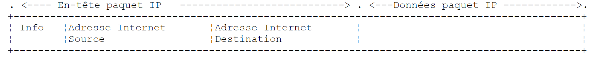
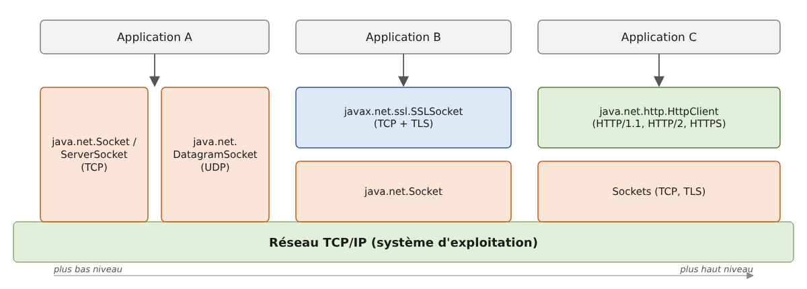
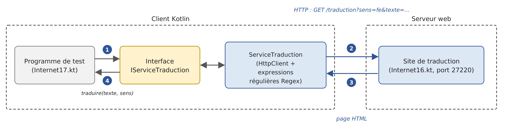
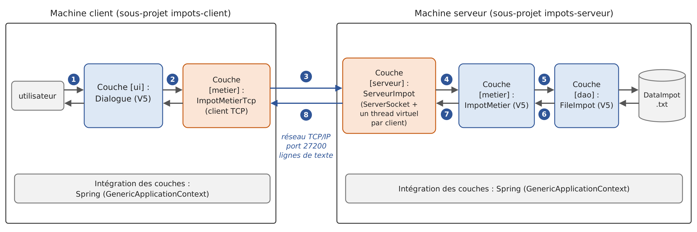

12. Web Programming
12.1. Overview
12.1.1. Internet Protocols
Here we provide an introduction to Internet communication protocols, also known as the TCP/IP protocol suite (Transmission Control Protocol / Internet Protocol), named after the two main protocols. It is helpful for the reader to have a general understanding of how networks work—and in particular, the TCP/IP protocols—before tackling the development of distributed applications. This presentation is based on a text from Novell’s “Lan Workplace for DOS” administration guide (early 1990s), retaining its structure and spirit while being updated: the Internet of 2026 is no longer quite the same as that of 1990.
The general concept of creating a network of heterogeneous computers stems from research conducted by the DARPA (Defense Advanced Research Projects Agency) in the United States. The DARPA developed the suite of protocols known as TCP/IP, which enables heterogeneous machines to communicate with one another. These protocols were tested on a network called ARPAnet, a network that later became the Internet (ARPAnet adopted TCP/IP on January 1, 1983). The TCP/IP protocols define formats and rules for transmission and reception that are independent of the network architecture and the hardware used.
The network designed by DARPA and managed by the TCP/IP protocols is a packet-switched network. Such a network transmits information in small pieces called packets. Thus, if a computer transmits a large file, it will be broken down into small pieces that are sent over the network to be reassembled at the destination. TCP/IP defines the format of these packets, including, in particular:
- the source of the packet;
- its destination;
- its length;
- its type.
Internet protocols are described in public documents called RFC (Request for Comments), published by the IETF (Internet Engineering Task Force) and available on www.rfc-editor.org. We will cite some of these documents throughout this chapter.
12.1.2. The OSI Model
The TCP/IP protocols broadly follow the open network model known as OSI (Open Systems Interconnection Reference Model) defined by the ISO (International Organization for Standardization). This model describes an ideal network in which communication between machines can be represented by a seven-layer model:

Each layer receives services from the layer below it and provides its own services to the layer above it. Suppose two applications located on different machines, A and B, want to communicate: they do so at the Application layer. They do not need to know all the details of how the network operates: each application passes the information it wishes to transmit to the layer below it, the Presentation layer. The application therefore only needs to know the rules for interfacing with the Presentation layer. Once the information is in the Presentation layer, it is passed on according to other rules to the Session layer, and so on, until the information reaches the physical medium and is physically transmitted to the destination machine. There, it will undergo the reverse process of what it underwent on the sending machine.
At each layer, the sender process responsible for sending the information sends it to a receiver process on the other machine that belongs to the same layer. It does so according to certain rules known as the layer protocol. The actual communication travels down through the layers of Machine A, crosses the physical network, and then travels up through the layers of Machine B; however, each layer perceives that it is communicating directly with the corresponding layer on the other machine.
The roles of the different layers are as follows:
Layer | Role |
Physical | Ensures the transmission of bits over a physical medium (copper cable, fiber optic cable, radio waves). Key considerations at this level include the encoding of information into signals and the transmission method. |
Data Link | Abstracts the physical characteristics of the Physical Layer. Divides information into frames, detects (and sometimes corrects) transmission errors, and manages access to the shared medium. |
Network | Manages the path that information sent over the network must follow. This is called routing: determining the route that information must take to reach its destination. |
Transport | Enables communication between two applications, whereas the previous layers only allowed communication between machines. One service provided by this layer is multiplexing: the transport layer uses a single network link (from machine to machine) to transmit data belonging to multiple applications. |
Session | Provides services that allow an application to open and maintain a working session on a remote machine. |
Presentation | Standardizes the representation of data across different machines. Data from machine A is “formatted” by machine A’s Presentation layer according to a standard format before being sent over the network. Once it reaches the Presentation layer of the destination machine B—which recognizes it based on its standard format—the data is reformatted so that the application on machine B can recognize it. |
Application | At this level are applications that are generally close to the user, such as email, the Web, or file transfer. |
12.1.3. The TCP/IP Model
The OSI model is a reference model that was never implemented as is. The TCP/IP protocol suite, which has become the standard, is organized into only four layers:

The Session and Presentation layers do not exist as such in TCP/IP: their functions, when necessary, are handled by the applications themselves or by intermediate protocols such as TLS (encryption of data exchanges), which is inserted between TCP and the application.
The Network Access Layer
In local area networks, the dominant technology today is Ethernet for wired connections and Wi-Fi (IEEE 802.11 standards) for wireless connections. Other technologies, such as Token Ring, have now disappeared.
Ethernet is the name given to a packet-switched local area network technology invented at Xerox in the early 1970s and standardized by Xerox, Intel, and Digital Equipment in 1980, and later by the IEEE (Standard 802.3). The original Ethernet consisted of a coaxial cable to which all machines were connected (bus topology), with a data rate of 10 megabits per second:

This was a broadcast network: a transmitting machine would send information over the cable that included the address of the destination machine; all connected machines would receive it, and only the intended recipient would retain it. Since multiple machines could decide to transmit at the same time, collisions had to be detected: this was the CSMA/CD access method (Carrier Sense Multiple Access / Collision Detect). Each transmitter listened to the cable before transmitting (CSMA) and, while transmitting, verified that what was passing over the cable was indeed what it had transmitted; if not, a collision occurred (CD): each would stop transmitting and try again after a random delay.
Modern Ethernet has evolved significantly: devices are connected via twisted-pair cables or fiber-optic cables to a switch, which routes each frame to the recipient’s specific port. Connections are full-duplex (simultaneous transmission and reception): there are no longer any collisions, and CSMA/CD has become obsolete. Typical data rates range from 1 to 10 gigabits per second, and much higher in data centers.
What has not changed is 48-bit addressing: each network card has an address, called a physical address or MAC (Media Access Control) address, generally written as six hexadecimal bytes (for example, [00:1A:2B:3C:4D:5E]). It is programmed into the card by the manufacturer, but—contrary to what has long been claimed—it can be modified via software: modern operating systems even use random MAC addresses on Wi-Fi networks to prevent a device from being tracked from network to network.
The Internet Layer (Network Layer)
The following protocols are found at this layer:
Protocol | Role |
IP (Internet Protocol) | delivers packets between two network nodes, in version 4 (IPv4) or 6 (IPv6) |
ICMP (Internet Control Message Protocol) | facilitates communication between the IP protocol program on one machine and that on another machine. It is therefore a protocol for exchanging control messages within the IP protocol itself |
ARP (Address Resolution Protocol) | maps a machine’s IP address to the machine’s physical address (in IPv6, this role is performed by the NDP protocol, the Neighbor Discovery Protocol) |
RARP (Reverse Address Resolution Protocol), which performed the reverse mapping, is also sometimes mentioned. It has long been deprecated in favor of DHCP, which we will discuss later.
The Transport Layer
This layer includes the following protocols:
Protocol | Role |
TCP (Transmission Control Protocol) | ensures reliable and orderly delivery of information between two applications |
UDP (User Datagram Protocol) | ensures unreliable delivery of information between two applications |
The QUIC (2021) protocol, on which HTTP/3 is based, is a reliable, encrypted transport protocol built on top of UDP.
The Application Layer
Here we find various protocols, which we will detail a little further on:
Protocol | Role |
HTTP, HTTPS (HyperText Transfer Protocol) | The Web protocol: a client (browser, application) requests resources from a web server. HTTPS is HTTP encrypted using TLS |
DNS (Domain Name System) | converts a hostname into an address IP |
SMTP (Simple Mail Transfer Protocol) | enables the sending of emails |
POP3, IMAP | allow you to read email stored on a server |
SSH (Secure Shell) | allows you to connect to a remote machine and execute commands on it, using encryption. It replaced TELNET, which performed the same function without encryption |
FTP (File Transfer Protocol), SFTP | enable file transfers |
DHCP (Dynamic Host Configuration Protocol) | allows a machine to automatically obtain its IP address and network configuration |
12.1.4. How Internet Protocols Work
Applications developed in the TCP/IP environment generally use several of the protocols in this environment. An application program communicates with the highest layer of the protocols. This layer passes the information to the layer below it, and so on, until it reaches the physical medium. There, the information is physically transferred to the receiving machine, where it will pass through the same layers again—in reverse order this time—until it reaches the application that is the intended recipient of the sent information. The following diagram shows the path of the information:

Let’s take an example: an application that sends a file to another machine using TCP.
- The application delivers a sequence of bytes to be transmitted to the transport layer;
- the transport layer divides this sequence of bytes into segments TCP and adds a header to the beginning of each segment containing, among other things, the source and destination port numbers as well as a sequence number. The segments are passed to the network layer, which is governed by the IP protocol;
- The IP layer creates a packet encapsulating the received TCP segment. In the header of this packet, it places the IP addresses of the source and destination machines. It also determines the physical address of the machine to which the packet should be delivered (the destination machine itself or a router). The entire packet is passed to the Network Access layer, that is, to the network card that connects the machine to the physical network;
- there, the packet IP is in turn encapsulated in a physical frame and sent to its recipient over the medium;
- On the destination machine, the Network Access layer performs the reverse process: it decapsulates the IP packet from the physical frame and passes it to the IP layer;
- the IP layer verifies that the packet is valid: it calculates a checksum of its header, which it must find in the packet’s header. If this is not the case, the packet is discarded;
- if the packet is deemed valid, the IP layer decapsulates the TCP segment contained within it and passes it upward to the transport layer;
- the TCP layer also verifies a checksum for the segment. If it is correct, it sends an acknowledgment to the source machine; otherwise, the segment is ignored (and will be resent by the source);
- Using the sequence numbers, the TCP layer rearranges the segments into the correct order;
- all that remains for the TCP layer to do is transmit the data portion of the segments to the destination application, identified by the destination port number.
12.1.5. Addressing Issues on the Internet
A network node can be a computer, a printer, a phone, a connected device—in fact, anything capable of communicating using the TCP/IP protocols. Each node has a physical address whose format depends on the type of network. On an Ethernet or Wi-Fi network, the physical address is encoded using 6 bytes.
A node’s Internet address (IP) is a logical address: it is independent of the hardware and the network used. In IPv4, it is a 4-byte address that identifies both a network and a node on that network. It is usually represented as four numbers—the values of the four bytes—separated by a period. For example, the address of the machine named “Lagaffe” at the Faculty of Sciences in Angers was long 193.49.144.1, and that of the machine named “Liny” was 193.49.144.9. From this, it could be deduced that the local network address was 193.49.144.0 and that there could be up to 254 nodes on that network.
Because IP addresses are independent of the physical network, a machine on network A can communicate with a machine on network B without worrying about the type of network the latter is on: it simply needs to know its IP address. The IP protocol on each network handles the conversion between IP addresses and physical addresses in both directions.
All public IP addresses must be unique. Their allocation follows a hierarchical structure: the IANA (Internet Assigned Numbers Authority) distributes address blocks to five regional registries, including the RIPE and NCC for Europe, which redistribute them to operators and large organizations. These entities then assign them to their customers. The administrator of a network that has received the block 193.49.144.0 through 193.49.144.255 can assign the addresses 193.49.144.1 through 193.49.144.254 as they see fit. In France, the INRIA was long responsible for assigning addresses; this has not been the case for quite some time.
12.1.5.1. The address classes IP and the notation CIDR
An address such as IPv4 is a sequence of 4 bytes written as I1.I2.I3.I4, which actually contains two pieces of information:
- the network address (the most significant bits);
- the address of a node within that network (the least significant bits).
Originally, the size of these two fields was determined by the value of the first byte. IP addresses were divided into three main classes:
Class | First byte | Network / Node | Number of networks and nodes |
A | 1 to 126 (most significant bit 0) | R1.N1.N2.N3: 1-byte network (7 significant bits), 3-byte node | 126 networks of 2²⁴ - 2 nodes (approximately 16 million) |
B | 128 to 191 (most significant 10 bits) | R1.R2.N1.N2: 2-byte network (14 significant bits), 2-byte node | 2¹⁴ = 16,384 networks of 2¹⁶ - 2 = 65,534 nodes |
C | 192 to 223 (110 most significant bits) | R1.R2.R3.N1: 3-byte network (21 significant bits), 1-byte node | 2²¹ networks (approximately 2 million) with 254 nodes |
Since the address of the Lagaffe machine is 193.49.144.1, the most significant byte is 193, which is 11000001 in binary: the network was a Class C network.
This classification proved to be far too rigid: an organization with 300 machines was required to use a Class B network, wasting more than 65,000 addresses. Since 1993 (RFC 1518 and 1519), the classes have been abandoned in favor of classless routing (CIDR, Classless Inter-Domain Routing). The boundary between the network portion and the host portion can be set at any bit; it is indicated by the length of the network prefix, following a slash:
- 193.49.144.0/24: the first 24 bits designate the network, and the last 8 bits designate the node. This network contains the addresses 193.49.144.0 through 193.49.144.255;
- 10.0.0.0/8: a network with 2²⁴ addresses;
- 192.168.1.0/26: a network of 2⁶ = 64 addresses, ranging from 192.168.1.0 to 192.168.1.63.
The old notation for the subnet mask is still used, which expresses the same thing: the /24 prefix corresponds to the mask 255.255.255.0. The terms “Class A, B, C” remain in common usage, but no longer correspond to any actual mechanism.
12.1.5.2. Reserved Addresses, Private Addresses, and NAT
Certain addresses serve a specific purpose:
- an address whose host part consists entirely of 0s refers to the network itself: 193.49.144.0 is the address of the 193.49.144.0/24 network;
- an address whose host portion consists entirely of 1s is a broadcast address: 193.49.144.255 refers to all hosts on the 193.49.144.0/24 network. These two addresses therefore cannot be assigned to a node: a /24 network with 256 addresses offers only 254 usable addresses;
- the addresses 127.0.0.0/8, and in practice 127.0.0.1, are loopback addresses: a machine uses them to refer to itself without going through the network. The name [localhost] is associated with them;
- the blocks 10.0.0.0/8, 172.16.0.0/12, and 192.168.0.0/16 (RFC 1918) are reserved for private networks: they can be used freely within a company or a home, but are not routed on the Internet;
- the blocks 192.0.2.0/24, 198.51.100.0/24, and 203.0.113.0/24 (RFC 5737) are reserved for documentation and examples.
The number of IPv4 addresses (2³², or just over 4 billion) is insufficient for all connected machines. The central pool of IANA addresses was exhausted in 2011, and those of RIPE and NCC in 2019. The shortage was circumvented by Network Address Translation (NAT): devices in a home have private addresses (such as 192.168.1.x), and the router connecting them to the Internet “translates” them to its own unique public address. The long-term solution is IPv6.
12.1.5.3. The IPv6 addresses
IPv6 (RFC 2,460 in 1998, now RFC 8,200) encode addresses using 128 bits, providing 2¹²⁸ possible addresses—approximately 3.4 × 10³⁸—so there is no longer any need to worry about a shortage. A IPv6 address is written as eight groups of four hexadecimal digits separated by colons:
Leading zeros in each group may be omitted, and a single sequence of zero groups may be replaced with [::]. The previous address is therefore written as [2001:db8::8a2e:0:370:7334]. The loopback address, equivalent to 127.0.0.1, is [::1]. In URL, the address IPv6 is placed in square brackets to avoid confusing its colon with the one preceding the port: [http://[::1]:8080/].
IPv6 introduces further simplifications: the packet header is fixed-length, automatic address configuration is built in by default, and NAT address translation is no longer necessary. Its adoption has been slow, but a significant and growing portion of Internet traffic now passes through IPv6 (Google, for example, publishes the proportion of its users who access it via IPv6), and the major French ISPs provide it to their subscribers. Both versions coexist: most machines have both IPv4 and IPv6 addresses (this is referred to as a “dual stack”), and programs must be able to handle both.
12.1.5.4. Protocols for converting between IP addresses and physical addresses
We have seen that when data is transmitted from one machine to another, as it passes through the IP layer, it is encapsulated in packets. These packets have the following form:

The IP packet therefore contains the IP addresses of the source and destination machines. When this packet is transmitted to the layer responsible for sending it over the physical network, additional information is added to form the physical frame that will ultimately be sent over the network. For example, the format of a frame on an Ethernet network is as follows:

The first 8 bytes (preamble) are used for synchronization; the 2-byte field preceding the data indicates, in the most common form of the Ethernet frame, the type of protocol being carried (IPv4, IPv6, ARP…) rather than the packet length. In the final frame, the physical addresses of the source and destination machines are included (in the actual frame, the destination address precedes the source address, unlike the order shown in the diagram). How are they obtained?
The sending machine, knowing the address IP of the machine it wants to communicate with, obtains that machine’s physical address using the ARP protocol (Address Resolution Protocol):
- it sends a special type of packet, called a ARP packet, containing the address IP of the machine whose physical address is being sought. It also includes its own address, IP, as well as its physical address;
- this packet is sent to all nodes on the local network (broadcast);
- these nodes recognize the special nature of the packet. The node that recognizes its address, IP, in the packet responds by sending its physical address to the sender. It can do this because it found the sender’s address, IP, and physical address in the packet;
- The sender therefore receives the physical address it was looking for. It stores it in a cache so it can use it later if other packets need to be sent to the same recipient.
In IPv6, the same service is provided by the NDP protocol (Neighbor Discovery Protocol), which relies on ICMPv6 messages.
The question remains: how does a machine know its own IP address? It can be specified in a configuration file on the machine—this is still the practice for servers. However, when an administrator needs to reorganize the network, modifying the configuration files of all machines one by one is tedious and prone to errors. The RARP protocol used to allow a machine to request its IP address from a server based on its physical address. It has been replaced by DHCP (Dynamic Host Configuration Protocol, RFC 2131): upon startup, the machine broadcasts a request over the network; a server (such as a home router or a dedicated server in a business) assigns it an address for a limited time (a lease), along with the rest of its configuration: network prefix, router address, and addresses of the DNS servers. The administrator then simply needs to configure the DHCP server. In IPv6, a machine can also construct its own address based on the prefix announced by the router (SLAAC autoconfiguration).
12.1.6. The network layer, known as the IP layer, of the Internet
The IP protocol defines the format that packets must take and how they must be handled when sent or received. This particular type of packet is called a IP datagram. We have already discussed it:
The important point is that, in addition to the data to be transmitted, the IP datagram contains the IP addresses of the source and destination machines. This way, the destination machine knows who is sending it a message.
Unlike a network frame, whose length is determined by the physical characteristics of the network it travels over, the length of the datagram IP is set by the software and will therefore be the same across different physical networks. We have seen that as we move down from the network layer to the physical layer, the datagram IP is encapsulated in a physical frame.
Physical frames travel from node to node toward their destination, which may not be on the same physical network as the sending machine. The packet IP may therefore be successively encapsulated in different physical frames at the nodes that connect two networks of different types. It is also possible that the packet IP is too large to be encapsulated in a physical frame (the payload of an Ethernet frame is limited to 1,500 bytes). In IPv4, the node where this problem occurs then splits the IP packet into fragments, which will only be reassembled at their final destination. In IPv6, routers no longer fragment packets: it is up to the sender to determine the maximum size accepted along the path and adjust the size of its packets accordingly.
12.1.6.1. Routing
Routing is the method of directing IP packets to their destination. There are two methods: direct routing and indirect routing.
Direct Routing
Direct routing refers to the transmission of a IP packet directly from the sender to the recipient within the same network:
- the machine sending a IP datagram has the recipient’s address IP;
- it obtains the recipient’s physical address via the ARP protocol, or from its cache if that address has already been obtained;
- it sends the packet over the network to that physical address.
Indirect Routing
Indirect routing refers to the transmission of a packet IP to a destination located on a network other than the one to which the sender belongs. In this case, the “network” portions of the IP addresses of the source and destination machines are different; the source machine detects this by comparing the destination address to its own network prefix. It then sends the packet to a special node called a router, which connects the local network to other networks and whose address IP is known to the source machine (this is called the default gateway; which is usually provided by DHCP). A router is connected to at least two networks and has a IP address in each of them:

In our example above:
- Network No. 1 has the address 193.49.144.0/24 and Network No. 2 has the address 193.49.145.0/24;
- within network #1, the router has the address 193.49.144.6, and within network #2, it has the address 193.49.145.3.
The router’s role is to take the packet IP that it receives—contained in a physical frame from network #1—and place it into a physical frame that can travel over network #2. If the address IP of the packet’s destination is on network #2, the router will send the packet directly to it; otherwise, it will send it to another router connecting network #2 to network #3, and so on. Internet routers constantly exchange information about the networks they can reach (routing protocols such as BGP between operators) to build their routing tables.
12.1.6.2. Error and Control Messages
Also in the network layer—and thus at the same level as the IP protocol—is the ICMP protocol (Internet Control Message Protocol). It is used to send messages about the internal operation of the network: unreachable node, packet having traversed too many routers, etc. ICMP messages are encapsulated in IP packets and sent over the network. The IP layers of the various nodes take the appropriate actions based on the ICMP messages they receive. Thus, an application itself never sees these network-specific issues. The [ping] commands (which send ICMP “Echo Request” messages and wait for “Echo Reply” messages) and the [traceroute] / [tracert] (which displays the routers traversed) are based on ICMP.
12.1.7. The transport layer: the UDP and TCP protocols
12.1.7.1. The UDP protocol: User Datagram Protocol
The UDP protocol enables an unreliable exchange of data between two points; that is, the successful delivery of a packet to its destination is not guaranteed, nor is the order in which packets arrive. The application, if it chooses, can handle this itself—for example, by waiting for an acknowledgment after sending a message before sending the next one.
So far, at the network level, we have discussed machine addresses such as IP. However, on a single machine, different processes can coexist simultaneously, and all of them can communicate with one another. Therefore, when sending a message, you must specify not only the IP address of the destination machine, but also the “name” of the destination process. This name is actually a 16-bit number (from 1 to 65,535), called a port number. Certain numbers are reserved for standard applications: port 53 for DNS, 80 for HTTP, 443 for HTTPS, 25 for SMTP, and so on. Ports below 1024 are called “well-known”; under Linux, special privileges are required to start a service on one of them. The examples in this chapter use ports from the ranges 27100–27199 and 27200–27299.
Packets handled by the UDP protocol are called datagrams. They have the following form:

These datagrams are encapsulated in IP packets, and then in physical frames. UDP is used when speed is more important than reliability, or when the application handles losses itself: DNS (one question, one answer), live audio and video streaming, online gaming, and the QUIC protocol from HTTP/3.
12.1.7.2. The TCP protocol: Transmission Control Protocol
For secure communications, the UDP protocol is insufficient: the application developer must create a protocol themselves to verify that packets are routed correctly. The TCP protocol avoids these issues. Its characteristics are as follows:
- The process that wishes to transmit data first establishes a connection with the process that will receive the information it is about to transmit. This connection is established between a port on the sending machine and a port on the receiving machine through an exchange of three segments (SYN, SYN-ACK, ACK: the “three-step handshake”). A virtual circuit is thus created between the two ports, which will be reserved exclusively for the two processes that established the connection;
- all bytes transmitted by the source process arrive at their destination in the order in which they were transmitted, which is not guaranteed by the UDP protocol since packets may follow different paths;
- The transmitted information is continuous: it is a stream of bytes. The transmitting process sends information at its own pace. This information is not necessarily sent immediately: the TCP protocol may wait until it has enough data to send. The data is placed into a structure called a TCP segment. Once this segment is filled, it is transmitted to the IP layer, where it is encapsulated into a IP packet. An important implication for the programmer: a “line” sent all at once may arrive in several pieces, and several lines may arrive together. It is up to the application to identify the boundaries of its messages (we will use the end-of-line character for this);
- Each segment sent by the TCP protocol is numbered. The receiving TCP protocol verifies that it is receiving the segments in sequence. For each segment received correctly, it sends an acknowledgment to the sender;
- if, after a certain amount of time, the TCP protocol that sent a segment does not receive an acknowledgment, it retransmits the segment in question, thereby ensuring the quality of the information delivery service;
- The virtual circuit established between the two communicating processes is full-duplex: information can travel in both directions simultaneously. Thus, the destination process can send acknowledgments even while the source process continues to send information. This allows, for example, the source TCP protocol to send multiple segments without waiting for acknowledgments. If, after a certain amount of time, it realizes that it has not received an acknowledgment for a specific segment No. n, it will resume transmitting segments from that point;
- TCP also regulates its data rate to avoid overloading the recipient (flow control) or the network (congestion control).
12.1.8. The Application Layer
Above the UDP and TCP protocols are various standard protocols:
TELNET and SSH
TELNET allows a user on machine A to connect to machine B (often called the host machine) as if they had a terminal connected to that machine. TELNET is based on TCP. Its data exchanges, including passwords, are transmitted in plain text: it has been replaced by SSH (Secure Shell), which provides the same service in an encrypted manner and is also used for secure file transfer (SFTP, SCP) and for creating tunnels. The [telnet] client program has long been a convenient tool for “manually” communicating with a TCP server: we’ll see how to replace it.
FTP (File Transfer Protocol)
This protocol enables the exchange of files between two remote machines as well as file operations such as creating directories. It is based on the TCP protocol. Like TELNET, it transmits passwords in plain text; it is being phased out in favor of SFTP and HTTPS.
TFTP (Trivial File Transfer Protocol)
This protocol is a simplified variant of FTP. It is based on the UDP protocol. It is still used to boot machines over the network.
DNS (Domain Name System)
When a user wants to exchange information with a remote machine, they must know that machine’s IP address. It is much more convenient to refer to a machine by a name than by its IP address. This raises the issue of name uniqueness: there are billions of interconnected machines. One might imagine a centralized authority assigning the names, but that would be very cumbersome. Control over names has been distributed across domains. Each domain is managed by an organization that has complete freedom to choose names within its domain. Thus, machines in France often belong to the domain [fr], managed by AFNIC (INRIA managed it until the creation of AFNIC in 1997). To further simplify matters, control is further decentralized: domains are created within the [fr] domain. For example, the University of Angers owns the [univ-angers.fr] domain; the department that manages it has complete freedom to name the computers on the university’s network and to create subdomains.
A machine’s full name (FQDN, Fully Qualified Domain Name) specifies the hierarchy of domains to which it belongs, from the most specific to the most general: [www.univ-angers.fr]. Within a domain, relative names can often be used, which are automatically completed by the system.
An application can therefore refer to a machine by its name. Ultimately, however, you still need to obtain the address IP for that machine. Suppose you want to communicate from machine A to machine B:
- Machine A first checks a local mapping file ([/etc/hosts] on Linux and macOS, [C:\Windows\System32\drivers\etc\hosts] on Windows), then its cache;
- otherwise, it queries the server DNS, whose address is listed in its configuration (usually provided by DHCP). It sends a request DNS containing the name of the machine being sought. If the queried server knows the answer or has it cached, it returns the corresponding IP address to machine A. Otherwise, it in turn queries—starting from the root servers—the servers responsible for the domain [fr], then [univ-angers.fr], and so on, until it obtains the answer, which will then be relayed back down to machine A.
The DNS domain associates various types of records with a name: A (address IPv4), AAAA (address IPv6), CNAME (alias to another name), MX (domain mail servers), etc.
HTTP and HTTPS (HyperText Transfer Protocol)
This is the Web protocol, and by far the most widely used today: not only by browsers, but also by applications that exchange data (the web services discussed in the next chapter). We will examine it in detail. HTTPS is HTTP transmitted over a connection encrypted by TLS (Transport Layer Security); this is now the standard form of the Web.
SMTP, POP3, and IMAP
SMTP is used to send emails, while POP3 and IMAP are used to read emails stored on a server. We will also discuss these.
XDR, RPC, NFS
Finally, let’s mention three protocols defined by Sun Microsystems, the company that created Java: XDR (eXternal Data Representation), which specifies a standard, machine-independent data representation; RPC (Remote Procedure Call), a remote procedure call protocol based on XDR; NFS (Network File System), which allows one machine to “see” another machine’s file system and is based on RPC. NFS remains in use in the Unix world. The concept of remote procedure calls has been adopted by numerous successors; today, these include the web services REST (based on HTTP) and gRPC (based on HTTP/2).
12.1.9. Conclusion
In this introduction, we have presented some of the main features of Internet protocols. To explore this field in greater depth, readers may consult Douglas Comer’s seminal work, *Internetworking with TCP/IP, Volume 1 ” (Pearson, 6th edition)—previous editions of which have been translated into French—as well as the RFC cited in this chapter. For HTTP, the Mozilla documentation at developer.mozilla.org/fr/docs/Web/HTTP is an excellent introduction.
12.2. Address Management Classes IP
A machine on the Internet is identified by an address IP, which can take two forms:
- IPv4: encoded in 32 bits and represented by a string of the form "I1.I2.I3.I4," where In is a number between 0 and 255;
- IPv6: encoded in 128 bits and represented by a string of eight groups of hexadecimal digits separated by colons, such as "2001:db8::8a2e:370:7334." Today, we can no longer ignore these addresses: our programs will accept them.
A machine can also be identified by a name. This name is not required, since applications ultimately always use the machines' IP addresses. Names are there to make life easier for users: it is easier to ask a browser for theURL and [https://kotlinlang.org] than the URL formed from one of this site’s IP addresses, which, incidentally, changes depending on where the query is made from.
A machine can have multiple IP addresses: a loopback address, one address per network to which it is connected, and IPv4 and IPv6 addresses.
The Kotlin standard library does not provide its own network classes: on the JVM, a Kotlin program directly uses those from the JDK, in the [java.net] package. This entire chapter is therefore based on the same classes as the Java course; what changes is how they are used: properties instead of [getXxx] accessors, extension functions from the standard library, [use] to close resources, and the absence of checked exceptions.
An address IP can be represented in two ways:
- as a string such as "I1.I2.I3.I4" or "2001:db8::1";
- as an object of type [InetAddress] (package [java.net], which must be imported: unlike a Java compact source file, a Kotlin file automatically imports only the packages [kotlin.*], [kotlin.collections.*], [kotlin.io.*], [kotlin.text.*]… and [java.lang.*]).
The InetAddress class
The class [InetAddress] has no public constructor: its instances are created using static constructor methods. It has two derived classes, [Inet4Address] and [Inet6Address], one for each version of IP. Among its methods are the following (Kotlin treats the parameterless methods [getXxx()] and [isXxx()] as properties: we write [adresse.hostAddress] instead of [adresse.getHostAddress()], and [adresse.isLoopbackAddress]):
Method | Role |
static InetAddress ofLiteral(String string) | (Java 22) converts an address IPv4 or IPv6 written in digits into a [InetAddress] object, without ever querying the DNS; throws a [IllegalArgumentException] if the string is not a IP address. [Inet4Address.ofLiteral] and [Inet6Address.ofLiteral] accept only one of the two versions |
static InetAddress getByName(String nomOuAdresse) | returns the address of a machine identified by its name or by its address IP. If the string is not an address IP, the name is looked up in the DNS; throws a [UnknownHostException] if the machine cannot be found |
static InetAddress[] getAllByName(String nomOuAdresse) | Same as above, but returns all IP addresses for the machine (a [Array<InetAddress>] in Kotlin) |
static InetAddress getLocalHost() | the address of the machine on which the program is running, along with its name |
static InetAddress getLoopbackAddress() | the loopback address (127.0.0.1 or ::1). A service associated with this address accepts only clients located on the same machine as itself |
byte[] getAddress() | returns the bytes of the address (4 in IPv4, 16 in IPv6): property [address] of type [ByteArray] in Kotlin |
String getHostAddress() | returns the address in text form: property [hostAddress] |
String getHostName(), String getCanonicalHostName() | the machine name (properties [hostName], [canonicalHostName]); if the object was created from an address IP, this name is obtained by a “reverse” lookup in DNS (the address itself is returned if this lookup fails) |
boolean isLoopbackAddress(), isSiteLocalAddress(), isAnyLocalAddress()… | return [true] if the address is a loopback address, a private address (10.x.y.z, 172.16.x.y through 172.31.x.y, 192.168.x.y), the “wildcard” address 0.0.0.0, or :: … (properties [isLoopbackAddress], [isSiteLocalAddress]…) |
Static methods of a Java class are called in Kotlin the same way as in Java, prefixed with the class name: [InetAddress.getByName("localhost")]. They do not become properties: you write [InetAddress.getLoopbackAddress()].
Two other classes complement [InetAddress]:
- [InetSocketAddress] represents a connection point: an address IP and a port number. Its properties [address] and [port] provide these two pieces of information. The constructor [InetSocketAddress(port)] associates the port with the wildcard address 0.0.0.0, which refers to all addresses on the machine;
- [NetworkInterface] represents a network interface on the machine (an Ethernet card, a Wi-Fi card, the loopback interface, etc.), along with its addresses IP.
JDK, on the other hand, does not have a class representing a network in CIDR notation, such as 193.49.144.0/24: we will write it ourselves, in the form of a data class that overloads the [in] operator. The program [Internet01.kt] illustrates these classes:
Results:
Comments:
- lines 3–6: the classes from [java.net] must be imported;
- lines 12–13: the strings to be parsed, in a read-only list;
- line 17: [InetAddress.ofLiteral] (Java 22) converts the string into a [InetAddress] object if it is a IPv4 or IPv6 address, and throws a [IllegalArgumentException] otherwise (line 23). Since the exception object is not used, it is named [_]: the compiler then knows that it is intentionally ignored;
- line 18: the [is] operator (the equivalent of Java’s [instanceof]) distinguishes between the two versions of IP: the rendered object is an instance of [Inet4Address] or [Inet6Address]. Since Kotlin’s [if] is an expression, it replaces Java’s ternary operator;
- lines 19–20: the [address] property (the Java method [getAddress]) returns the bytes of the address in a [ByteArray], which the Kotlin standard library extension function [toHexString] displays in hexadecimal; the [HexFormat.UpperCase] parameter requires uppercase letters. This refers to Kotlin’s [HexFormat] (package [kotlin.text], imported automatically), not to be confused with the [java.util.HexFormat] class used in the Java course. We can see (line 2 of the results) that 193.49.144.1 is composed of the four bytes C1, 31, 90, 01, and (line 5) that ::1 is composed of 15 null bytes followed by a byte with a value of 1;
- lines 21–22: the message is constructed using string templates; [isLoopbackAddress] and [isSiteLocalAddress] (the Java methods [isXxx()], treated as Boolean properties) recognize the loopback addresses and private addresses of RFC 1918;
- line 4 of the results: a surprise. The string "192.168.1" was accepted and converted to 192.168.0.1. [ofLiteral] does indeed accept the historical abbreviated forms of IPv4 addresses (in which case the last number occupies all remaining bytes). To verify that an entry is a complete IPv4 address, you must therefore also check that it contains four numbers;
- lines 5–6 of the results: the addresses IPv6 are redisplayed by [hostAddress] in full form, without the abbreviation [::] or the leading zeros: [0:0:0:0:0:0:0:1] for [::1]. The prefix 2001:db8::/32 is, like 192.0.2.0/24 in IPv4, reserved for documentation;
- Lines 29–32: The older method [getByName] accepts either a IP address or a machine name. Since the string "256.1.1.1" is not a valid IP address (256 does not fit into a single byte), [getByName] interprets it as a hostname and queries DNS, which does not recognize it: this results in a [UnknownHostException] (line 9 of the results). [ofLiteral] was added in Java 22 to prevent this unexpected query from DNS. The exception message here comes from the Linux system library. The expression [e::class.simpleName] is the Kotlin class reference ([KClass]); it replaces [e.getClass().getSimpleName()]. Note that, since Kotlin does not have controlled exceptions, there is no requirement to catch the [UnknownHostException]: we do so because we want to display it, not because the compiler requires it;
- Line 36: the loop address. The display of an object [InetAddress] by [toString], implicitly called by the template [${…}], takes the form [nom/adresse], with the name being empty if it is unknown;
- line 37: the wildcard address 0.0.0.0, obtained here by a [InetSocketAddress] without an address. As in C#, an object is created without the keyword [new];
- lines 40–43: [InetSocketAddress] objects associating an address and a port. They are displayed (lines 12–13 of the results) in the form [nom/adresse:port]; in IPv6, the address is enclosed in square brackets;
- lines 55–77: a data class (Chapter 4) that represents a network in CIDR notation. It is declared in the same file as the function [main], immediately following it;
- lines 57–61: the function [parse], located in the companion object, is called like a static Java method: [Reseau.parse("193.49.144.0/24")]. It parses a string of the form [adresse/préfixe]; the destructuring assignment [val (ip, longueur) = cidr.split("/")] assigns the two elements of the list returned by [split] to two variables;
- lines 66–73: An address belongs to the network if its [prefixe] most significant bits match those of the network address. Bit number [bit] is located in byte number [bit / 8]; the mask [0x80 shr (bit % 8)] isolates it within that byte. Kotlin does not have the operators [>>] and [&]: it uses the infix functions [shr] and [and], defined on [Int] (hence the [toInt()] conversion of the bytes). The Java loop with its [return false] is replaced by the function [all] applied to the interval [0 until prefixe]: it returns [true] if the lambda is true for all bits, and stops at the first different bit;
- line 66: because the function is named [contains] and has the modifier [operator], we can write [adresse in reseau] (line 49), as we would for a collection. This is operator overloading from Chapter 4, which C# also supports but Java does not. Lines 14–15 of the results show that 193.49.144.1 belongs to the 193.49.144.0/24 network and that 193.49.145.3 (the address of the router in our diagram, on its second network) does not belong to it. This is exactly the test a machine performs to choose between direct and indirect routing;
- line 77: the data class generates a [toString] in the form [Reseau(adresse=…, prefixe=…)]; we redefine it to display the notation CIDR.
DNS and network interfaces
The mapping between IP and the machine name is handled by DNS. It is queried using the static methods [getByName] and [getAllByName] of [InetAddress], which have already been described; in the opposite direction, the properties [hostName] and [canonicalHostName] perform a reverse lookup. These methods are blocking: a DNS request can take several tens of milliseconds, or even several seconds if a server does not respond, during which time the calling thread is blocked. JDK does not offer an asynchronous version of these methods; the solution is to call them in a virtual thread (Chapter 8), which incurs almost no overhead while waiting, or, in a coroutine, to wrap them in [withContext(Dispatchers.IO) { … }] (Chapter 9). Since Java 18, you can also override the name resolution mechanism used by [InetAddress] by providing your own implementation of the [InetAddressResolver] interface, which is useful for testing.
The [NetworkInterface] class, along with its static method [networkInterfaces], returns a stream ([Stream]) of the machine’s network interfaces; for each one, the property [name] provides its name, [isUp] indicates whether it is active, and the method [inetAddresses] returns a stream of its addresses (IP). In Kotlin, these Java streams are converted to Kotlin sequences using the extension function [asSequence] (package [kotlin.streams]), so that the usual operations can be applied to them ([filter], [joinToString]…).
The program [Internet02.kt] displays the name and network interfaces of the machine on which it is running, then interactively lists the mappings between the machine name and IP addresses:
Results (input was redirected; we have reinserted the entries after each prompt):
Comments:
- lines 14–15: the name and address of the local machine. Our test machine is a Linux virtual machine named [vm]; for the reader, this will of course be the name of their own computer;
- lines 17–21: the active network interfaces and their addresses. The Java stream is converted to a Kotlin sequence by [asSequence]; we retain the active interfaces using [filter { it.isUp \}], then display each one with [forEach]. The Java version had to go through an auxiliary method, [active]: [isUp] throws a controlled exception ([SocketException]), which the functional interface [Predicate] does not allow. In Kotlin, which does not have controlled exceptions, [isUp] is written directly in the lambda (if it threw a [SocketException], it would simply propagate);
- line 20: the IP addresses in the interface are combined into a single string by [joinToString], whose default separator is [", "]; the lambda provides the string to be used for each element. This is equivalent to [map(InetAddress::getHostAddress).collect(Collectors.joining(", "))];
- lines 27–28: the prompt is displayed by [print], then [readlnOrNull] reads a line from the keyboard; it returns [null] if standard input is closed. The operator [?.] calls [trim] and [lowercase] only if the line is not [null], and the Elvis operator [?:] replaces a [null] with the empty string;
- line 33: the query for DNS. If the name (or address) is unknown, a [UnknownHostException] is issued (line 38);
- line 35: the machine’s name. If a IP address was provided, [hostName] performs a reverse lookup;
- line 37: the machine’s addresses are combined into a single string; [joinToString] applies equally to the array returned by [getAllByName] as well as to collections and sequences.
The results warrant a few comments. They depend on the machine’s configuration: don’t expect to get exactly the same results on your own machine.
- Lines 2–4: The test machine has two active interfaces: [eth0], connected to the network, and [lo], the loopback interface. The machine name is associated with the address 127.0.0.1 by the file [/etc/hosts];
- lines 5–7: the name [localhost] corresponds to the loopback address 127.0.0.1. On a machine where IPv6 is active, ::1 would also be returned;
- line 12: with the address IP, [hostName] performed a reverse lookup and returned the name associated with the address;
- line 15: the reverse lookup for ::1 failed because the [/etc/hosts] file on our test machine does not associate any name with this address: [hostName] returned the address itself. On Windows, the machine name would be returned;
- line 18: the name [xx] is unknown. The exception message comes from the Linux system library; it would be different on Windows.
On a machine connected to the Internet, you can also look up a public name such as [kotlinlang.org]. This returns addresses that vary depending on the location and time of the request. We do not reproduce this result, as our test machine does not have Internet access.
12.3. The Basics of Web Programming
12.3.1. General Information
Consider communication between two remote machines, A and B:

When an application AppA on machine A wants to communicate with an application AppB on machine B on the Internet, it must know several things:
- the address IP or the name of machine B;
- the port number used by the AppB application. This is because machine B may host many applications that operate on the Internet. When it receives information from the network, it must know which application the information is intended for. The applications on machine B access the network through interfaces called communication ports. The destination port number is contained in the segment received by machine B so that it can be delivered to the correct application;
- the communication protocols understood by machine B. In our study, we will use only the TCP/IP protocols;
- the communication protocol supported by the AppB application. In fact, machines A and B will “communicate” with each other. What they say will be encapsulated in the TCP/IP protocols. However, when the application AppB at the other end of the chain receives the information sent by the application AppA, it must be able to interpret it. This is analogous to a situation where two people, A and B, are communicating by phone: their conversation is carried over the phone, but if A speaks French and B does not understand that language, A and B will not be able to have a meaningful conversation. The two communicating applications must therefore agree on the type of communication they will use. For example, communication with a web server is not the same as communication with a mail server: these two services do not accept the same commands. They have different communication protocols.
12.3.2. Characteristics of the TCP Protocol
Here, we will focus only on network communications using the TCP transport protocol. Let’s review its key characteristics for programmers:
- A connection is first established between a port on the client machine and a port on the server machine. It is identified by four pieces of information: the client’s IP address and port, and the server’s IP address and port;
- the connection carries two streams of bytes, one in each direction (full-duplex). The bytes arrive in the order in which they were transmitted, without loss or duplication;
- TCP does not recognize the concept of a message: it is up to the application’s communication protocol to delimit requests and responses (via a line break, a specified length, closing the connection, etc.);
- One of the two parties closes the connection; the other detects this when it reaches the end of the read stream.
12.3.3. The Client-Server Relationship
Communication over the Internet is often asymmetric: Machine A initiates a connection to request a service from Machine B. It specifies that it wants to establish a connection with Machine B’s SB1 service. Machine B either accepts or rejects the request. If it accepts, machine A can send its requests to service SB1. These requests must comply with the communication protocol understood by service SB1. A request-response dialogue is thus established between machine A, referred to as the client machine, and machine B, referred to as the server machine. One of the two partners will close the connection.
12.3.4. Client Architecture
The architecture of a network program requesting the services of a server application will be as follows:
12.3.5. Server Architecture
The architecture of a program offering services will be as follows:
The server program handles a client’s initial connection request differently from its subsequent requests for service. The listening program does not provide the service itself: if it did, it would no longer be listening for connection requests while the service was in progress, and other clients would not be served. It therefore proceeds differently: as soon as a connection request is received on the listening port and then accepted, the server delegates to another thread the task of providing the service requested by the client, over the service connection that has just been established. This makes it possible to serve multiple clients at the same time:

It is sometimes claimed that, on the server side, the service connection uses a different, randomly chosen port. This is incorrect: all service connections use the server’s listening port; they are distinguished from one another by the client’s address and port, which are different. We will see this in the output from our echo server.
A service thread will have the following structure:
12.4. Exploring Internet Communication Protocols
12.4.1. Introduction
When a client connects to a server, a dialogue is established between them. The nature of this dialogue constitutes what is known as the server’s communication protocol. Among the most common Internet protocols are the following:
- HTTP: HyperText Transfer Protocol, the protocol for communicating with a web server (HTTP server);
- SMTP: Simple Mail Transfer Protocol, the protocol for communicating with an email sending server (server SMTP);
- POP: Post Office Protocol, the protocol for communicating with an email storage server (server POP). This is used to retrieve received emails, not to send them. IMAP serves the same purpose;
- FTP: File Transfer Protocol, the protocol for communicating with a file storage server (server FTP).
These protocols, in their historical versions, are characterized by being text-based: the client and server exchange lines of text terminated by the two characters \r\n (carriage return, line feed). If you have a client capable of:
- establish a connection with a TCP server;
- display on the console the lines of text that the server sends to it;
- send the lines of text that a user types on the keyboard to the server,
so we can communicate with a TCP server that uses a text-based protocol, provided we know the rules of that protocol.
The program [telnet], which used to be available on Unix and Windows machines, is one such client; the tool PuTTY, configured in raw connection mode, is another. The [telnet] client is no longer installed by default on Windows, and most public servers no longer accept unencrypted communication. We will proceed differently:
- for HTTP, we will use the [curl] tool, available by default on Windows 10 and 11, macOS, and Linux, which displays the details of the exchanges, followed by the generic TCP client that we will write later in this chapter. On Windows, PowerShell and [curl] are aliases for the command [Invoke-WebRequest]: you must type [curl.exe];
- since we do not have access to real servers, we will query a small web server that we are writing ourselves and that runs on the local machine;
- For SMTP, POP, and FTP, we will present sample dialogs that conform to RFC, which defines these protocols.
12.4.2. A Test Web Server
Our test web server uses the small HTTP server provided with JDK, in the [jdk.httpserver] module ([com.sun.net.httpserver] package). Despite its package name, it is a public and well-documented API class that has been available since Java 6; it is sufficient for writing a test server in a single file, without any libraries, and a Kotlin program uses it just like any other class in the JDK package. Real web services typically use a full-fledged server like Tomcat, which we’ll explore with Spring Boot in the next chapter. You don’t need to understand this program in detail just yet—it’s enough to know what it returns. The [Internet03.kt] program is as follows:
Comments:
- Lines 3–7: The classes from the HTTP server, JDK, and [java.net] are imported. The module [jdk.httpserver] is part of JDK: no dependencies need to be declared in [build.gradle.kts];
- Lines 15–21: the home page, a small HTML document written with a raw string [""" ... """], which avoids escaping the quotation marks. The function [trimIndent] removes the common indentation from the lines as well as the first and last lines if they are empty; the final line break of the document is then added. The constant is [private]: it is only visible in this file;
- line 24: the listening port, 27110 by default. [firstOrNull] returns the first argument, or [null] if there is none; the Elvis operator [?:] then provides the default value;
- line 26: the server listens on the loopback address 127.0.0.1: it is accessible only from the machine itself. The second parameter of [create] is the connection queue size (0: system default);
- line 28: all URL functions starting with [/]—and therefore all URL functions—are delegated to the [traiter] function. The second parameter of [createContext] is a [HttpHandler], a Java interface with a single abstract method, [handle(HttpExchange)], which receives the current exchange: the client’s request and the response to be constructed. Thanks to the conversion SAM (Chapter 7), a lambda—written after the parentheses—is passed to it; this lambda calls [traiter], also passing it the port, a local variable of [main] captured by the lambda;
- line 29: the server starts running in its own threads; the function [main] terminates, but the program continues to run until it is stopped with Ctrl-C;
- line 35: a [HttpExchange] must be closed once the response is sent. It implements [AutoCloseable]: the function [use] will close it at the end of the block, no matter what happens;
- Lines 36–37: The Java methods [getRequestMethod()] and [getRequestURI().getPath()] are treated as properties. String comparison is performed by [==] and [!=], which compare the contents (where Java requires [equals]);
- lines 38–40: only the methods [GET] and [HEAD] are accepted; the others receive a 405 response (method not allowed);
- Lines 42–55: Selecting the response based on URL, using a [when] statement (Java’s [switch]). The named arguments in [avecTaille = true] make calls to [envoyer] more readable than an anonymous boolean;
- line 44: URL [/] renders the home page;
- line 46: URL [/bonjour?nom=xx] renders the text [Bonjour xx !];
- line 49: URL [/ancienne] causes a temporary redirect (status code 302) to the relative address [/bonjour?nom=visiteur];
- line 51: URL [/deplacee] causes a permanent redirect (status code 301) to the absolute address [http://localhost:27110/];
- line 53: URL redirects to [/boucle], which redirects back to itself: a client that blindly followed the redirects would never stop;
- line 55: any other URL request receives a 404 response (page not found). The [sendResponseHeaders(code, taille)] method sends the status line and headers; a size of -1 means no document follows;
- line 59: Each processed request is displayed on the console along with the response status code;
- lines 64–75: sending a text document. [toByteArray] encodes the string using UTF-8, the default character set for this Kotlin function. The response headers are set by [echange.responseHeaders["Content-Type"] = type] (line 66): the [Headers] object has a Java method [set(String, String)], and Kotlin allows such a method to be called using bracket syntax, similar to a C# indexer. [sendResponseHeaders] then sends the headers along with the document size, a [Long]: The [toLong()] conversion is explicit, as Kotlin never implicitly converts a [Int] to a [Long]; the document is finally written to the [responseBody] stream (line 75). A size of 0 (line 74) means “unknown size”: the document is then sent in chunks, as we will see later. For a request [HEAD], no document is sent, but the size it would have had is specified (lines 67–71);
- lines 79–81: a redirect, consisting of a status code and a [Location] header providing the new address;
- lines 85–91: the value of a parameter in URL. [rawQuery] returns the portion of URL that follows [?], still encoded, or [null] if there is none. The Java program loop is replaced by a sequence of “safe” [?.] calls: if [rawQuery] is [null], the entire chain evaluates to [null], and the Elvis operator returns the default value. Otherwise, the query is split into pairs [nom=valeur] ([split]), each pair into two parts at the first occurrence of [=] ([limit = 2]), [firstOrNull] searches for the first pair whose name matches the requested one (or returns [null]), and [let] decodes its value using [URLDecoder.decode] (we’ll see later why the values are encoded). The function, reduced to a single expression, is written as [=].
The server is launched in an initial command window. It displays:
Lines 3–4 appeared during the tests described in the following paragraph. The server is stopped by pressing Ctrl-C.
12.4.3. The HTTP protocol (HyperText Transfer Protocol)
While the server is running, we use a second command window to request the root directory ([/]) of the site [http://localhost:27110] using the tool [curl]. Its [-v] (verbose) option displays the entire HTTP dialog; the [-s] (silent) option suppresses the display of the transfer progress:
Notes:
- Lines beginning with [*] contain information from [curl]; lines beginning with [>] were sent to the server; those beginning with [<] were received from the server; the line [{ [178 bytes data]] indicates the arrival of the 178 bytes of the document, which is displayed at the end;
- Lines 2–6: [curl] obtained the addresses of [localhost] (::1 for IPv6 and 127.0.0.1 for IPv4) and connected to port 27110 on the address 127.0.0.1;
- lines 7–11: the client’s request. It consists of a first line in [méthode URL version] syntax (here, the [GET] method is used to request the document [/], that is, the site’s root, at HTTP/1.1), followed by HTTP headers in the form [Nom: valeur], and ends with a blank line;
- line 8: the [Host] header specifies the machine and port being queried; it is required in HTTP/1.1 because a single server can host multiple sites;
- line 9: the client software identifier;
- line 10: the document types accepted by the client—in this case, all;
- Lines 12–16: the server’s response: a status line and headers, also followed by a blank line;
- line 12: the status line, with the syntax [version code message]. The code 200 indicates that the requested document was found;
- line 13: the server’s date and time, always in Coordinated Universal Time (GMT);
- line 14: the document type (a HTML document) and its encoding (UTF-8);
- line 15: the size of the document in bytes. This is how the client knows where the document ends. Note that the JDK server writes header names with a single capital letter ([Content-type], [Content-length]): this is irrelevant, as HTTP header names are case-insensitive. It also does not send the optional header [Server], which most servers use to identify themselves ([Server: Apache], [Server: nginx]…);
- line 18: in HTTP/1.1, the connection remains open by default after the response (“keep-alive” mode) so that other requests can be served; [curl] leaves it open and then closes it upon termination;
- lines 19–23: the document sent by the server.
Now let’s request a document that doesn’t exist:
- line 7: we requested a nonexistent document;
- line 12: the server responded with a 404 status code, which means the requested document was not found;
- line 14: the document sent is empty. Our server, like many others, does not attach any document to a 404 response; other servers send a short explanatory page. A browser that receives a 404 response without a document displays its own error page.
Status codes are divided into five categories: 1xx (information), 2xx (success, 200 OK), 3xx (redirect, 301 and 302, which we’ll cover later), 4xx (client error: 404 Not Found, 401 Unauthorized, 403 Forbidden…), 5xx (server error: 500 Internal Server Error…).
The browser does the same thing as [curl]: it sends a request HTTP, receives the headers and the document, and then displays the document. Browser developer tools (F12 key, Network tab) allow you to view the exchanged headers.
A few notes on the current state of HTTP:
- HTTPS is now the standard: browsers flag a site using plain HTTP as “not secure.” With HTTPS, a TLS negotiation precedes the HTTP dialogue, and everything that follows is encrypted. It is therefore no longer possible to communicate “manually” with a HTTPS server using a simple TCP client. However, you can still observe the dialogue with [curl], which performs the TLS handshake and then displays the headers in plain text. For illustrative purposes only (we are not reproducing the result, as our test machine does not have Internet access), the command would be [curl -v https://kotlinlang.org/];
- HTTP/1.1 (RFC 9112 today) is a text-based protocol, the one we are studying. HTTP/2 (2015, now RFC 9113) retains the same methods, headers, and status codes, but transmits them in a compressed binary format and sends multiple requests simultaneously over a single TCP connection. HTTP/3 (2022, RFC 9114) does the same thing as QUIC, and thus as UDP. Browsers and servers automatically choose the most recent version they have in common; [curl], without any specific options, uses HTTP/1.1 for a URL [http://].
12.4.4. The SMTP protocol (Simple Mail Transfer Protocol)
The SMTP servers exchange email with each other on port 25. An email client that sends a message submits it to its provider’s SMTP server on port 587 (submission, with a switch to encrypted mode via the [STARTTLS] command) or 465 (encrypted connection from the start), after authenticating. Internet service providers generally block outgoing connections to port 25 from their subscribers’ routers to limit spam sent by infected machines: an unencrypted connection to a SMTP server is now virtually impossible from a personal computer.
Here, by way of illustration, is a typical SMTP dialogue consistent with RFC 5321. This is not an execution: lines prefixed with [C:] are sent by the client, those prefixed with [S:] by the server, and the domains [example.org] and [example.com] are reserved for examples:
- Line 1: Welcome message from the server. Each server response begins with a three-digit code: 2xx indicates success, 3xx means “please try again,” and 4xx and 5xx indicate an error;
- line 2: the client identifies itself. The command [EHLO] has replaced the old command [HELO]: it asks the server for a list of the extensions it supports;
- Lines 3–6: The server’s response, spanning multiple lines. The hyphen following the code indicates that the response continues; the last line has a space instead. Here, the server states that it accepts messages up to 10 MB in size, supports encrypted mode, and accepts 8-bit characters;
- line 7: the sender’s address;
- line 9: the recipient’s address (the command can be repeated for multiple recipients);
- line 11: the client announces the message;
- line 12: the server prompts the client to send the message and reminds it how to terminate it;
- lines 13–19: the message, consisting of headers ([From], [To], [Subject]…), a blank line, and the body, and ending with a line containing only a period;
- line 20: the server has accepted the message and placed it in its queue;
- Lines 21–22: The client signals that it has finished; the server closes the connection.
12.4.5. The POP protocol (Post Office Protocol)
POP3 servers operate on port 110, or on port 995 for a connection encrypted using TLS—the only option currently offered by most providers, since the password is transmitted during the dialogue. Here is a typical POP3 dialogue, compliant with RFC 1939, presented using the same conventions as the previous one:
- line 1: welcome message from the server. POP3 responses begin with [+OK] (success) or [-ERR] (error);
- line 2: the client provides its username, i.e., the name it uses to read its email;
- line 4: the client’s password (hidden here);
- line 6: the client requests a list of their emails;
- lines 7–10: the list of messages in the client’s mailbox, in the format [n° du message, taille en octets], ending with a line containing only a period;
- line 11: message #2 is requested;
- lines 12–23: message No. 2, with its headers, a blank line, and its body, also ending with a period;
- lines 24–25: the client indicates that it is finished; the server closes the connection.
POP3 is designed to download email to the user’s computer. It now faces significant competition from IMAP (port 143, or 993 with TLS; RFC 9051), which leaves messages on the server and allows them to be viewed and organized from multiple devices, as well as via web-based email clients.
12.4.6. The FTP protocol (File Transfer Protocol)
The FTP protocol (RFC 959) is more complex than those described previously: the dialogue (commands and their responses) takes place over a control connection open to port 21 on the server, and each file or file list transfer uses a second connection, opened specifically for that purpose. Here is a typical dialogue over the control connection:
- line 2: anonymous connection, as offered by public download servers;
- line 8: the client asks the server to open a port for the data connection. The server responds (line 9) that it is waiting for this connection on port 40312;
- line 10: the client requests the file [lisezmoi.txt]. The file arrives over the data connection, and the control connection receives the responses 150 (start of transfer) and 226 (end of transfer).
These commands can be seen in the log of a client such as FTP or FileZilla. However, FTP is becoming obsolete: it transmits passwords in plain text, has difficulty working with firewalls due to its second connection, and browsers have not supported it since 2021 (Chrome 88, Firefox 90). It is preferable to use SFTP, file transfer via SSH, and simple downloading via HTTPS.
12.5. Internet Programming Classes
12.5.1. Choosing the Right Class
JDK offers various classes for working with the network. These are the ones used by a Kotlin program: the Kotlin standard library does not offer any others, and the following diagram, created for the Java course, therefore remains accurate:

- The class [Socket] (package [java.net]) represents the end of a TCP connection. The English term “socket” refers to an electrical outlet; its meaning has been extended to refer to a software network socket. In a TCP/IP communication between two machines, A and B, it is two sockets that communicate with each other. A client creates a [Socket] to connect to a server; a server creates a [ServerSocket], which waits for connection requests and provides, for each accepted client, a [Socket] linked to that client. Once the connection is established, a [Socket] provides two byte streams—one for reading and one for writing—which are used like file streams. This is the case for Application A above;
- the [DatagramSocket] class allows you to send and receive UDP datagrams. We will not use it in this course;
- the classes [SSLSocket] and [SSLServerSocket] (package [javax.net.ssl]) add TLS encryption to [Socket]: once the TLS negotiation is complete, they are used exactly like ordinary sockets (Application B above);
- JDK also provides a class specialized for a protocol: [HttpClient] (package [java.net.http], Java 11), which handles the HTTP protocol in versions 1.1 and 2, including the TLS encryption of HTTPS (Application C above). It replaces the [HttpURLConnection] class from Java 1.1; we will return to this in the second part of this chapter. JDK does not have a class for email; the Jakarta Mail library is used for this purpose.
The classes [Socket] and [ServerSocket] have existed since Java 1.0. Their operations are blocking: [accept] blocks the calling thread until a client arrives; a read operation blocks it until data arrives. Java 1.4 added the [java.nio.channels] package ([SocketChannel], [ServerSocketChannel], [Selector]), which enables non-blocking operations, and Java 7 introduced asynchronous channels ([AsynchronousSocketChannel]). We’ll come back to this at the end of this chapter, before the example application: since the introduction of virtual threads (Java 21), the simpler classes [Socket] and [ServerSocket] are sufficient in most cases. These are the ones we’ll use.
It’s worth noting that the Kotlin ecosystem also has its own network libraries, built on coroutines (Chapter 9): Ktor, from JetBrains, offers a client and a server HTTP as well as “suspended” sockets, and also works outside of JVM (Kotlin Multiplatform). We will focus on the JDK classes, which are sufficient for our needs and which the reader will find in any JVM program.
12.5.2. The Socket Class
The [Socket] class is the appropriate choice in most cases for creating a client for a TCP service. Among its C constructors and M methods, it includes the following (Java signatures; in Kotlin, parameterless accessors are used as properties: [inputStream], [outputStream], [remoteSocketAddress], [soTimeout], [isClosed]…):
Member | Type | Role |
Socket(String machine, int port) | C | Establishes a TCP connection with the service running on port [port] on machine [machine]. For example, [Socket("localhost", 27100)]. Throws a [UnknownHostException] if the machine is unknown, a [ConnectException] if the connection is refused (these are two [IOException]) |
Socket(), void connect(SocketAddress address, int timeout) | C, M | creates an unconnected socket, then connects it while waiting for at most [delai] milliseconds: without a timeout, connecting to a machine that does not respond can take several tens of seconds |
InputStream getInputStream(), OutputStream getOutputStream() | M | the connection’s read and write byte streams. These are what enable client-server communication |
SocketAddress getLocalSocketAddress(), getRemoteSocketAddress() | M | the two ends of the connection (address and port) |
void setSoTimeout(int delay) | M | Maximum wait time for a read, in milliseconds: if exceeded, the read triggers a [SocketTimeoutException] (0, the default value, means “no delay”); in Kotlin: [client.soTimeout = 5000] |
void shutdownOutput() | M | closes the single write stream: the partner sees the end of the stream, but you can still read its response |
void close(), boolean isClosed() | M | closes the connection and its two streams; [Socket] implements [Closeable], and therefore [AutoCloseable]: in Kotlin, it is used with the function [use]. A read operation in progress in another thread then ends with a [SocketException] |
The streams [getInputStream] and [getOutputStream] read and write bytes. Many client-server applications exchange lines of text. Therefore, it is useful to wrap them in [BufferedReader], [PrintWriter], or [BufferedWriter] objects—introduced in Chapter 5—to read and write these lines. The Kotlin standard library provides extension functions for byte streams for this purpose: [flux.bufferedReader()] creates both the [InputStreamReader] and the [BufferedReader] that wraps it in a single step, [flux.bufferedWriter()] does the same for writing, and [flux.reader()] and [flux.writer()] create unbuffered character streams. All of them have an optional character set parameter; the default is UTF-8. Here’s how the echo client we’ll write later ([Internet05.kt]) connects and creates its streams:
- line 2: the connection to the server. The function [use] will close the connection—and with it, both streams—when the block exits, regardless of what happens: this is the [try] function with Java resources. Closing the socket is sufficient; its streams do not need to be closed separately;
- Line 4: The network stream is converted into a buffered character stream by the [bufferedReader] extension, which can read a line. The character set is not specified: it is UTF-8, the default value for Kotlin extensions (and JDK since Java 18), regardless of the machine’s configuration. Both parties must agree on the character encoding they use for their exchanges;
- line 6: the second parameter ([true]) of the [PrintWriter] constructor enables automatic flushing (“autoFlush”): each call to [println] immediately transmits the line to the network, without waiting for the internal buffer to fill up. This point is important. Generally, when a client sends a line of text to its partner, it expects a response. That response will never arrive if the line remains in the sending machine’s buffer without being sent. Without autoFlush, you must explicitly call [flush] after writing a complete request. The character set is specified explicitly here ([Charsets.UTF_8]); the constructor [PrintWriter(flux, true)] would use the default character set of JDK, which—like UTF-8—has also been available since Java 18.
To send a line of text to the server, we write [ecrivain.println("un texte")], and to read the server’s response, [val reponse = lecteur.readLine()]. [readLine] becomes [null] when the partner has closed the connection and everything they sent has been read: this marks the end of the stream. Kotlin therefore interprets the result as a [String?], which requires handling the [null] case; the most common pattern is [val ligne = lecteur.readLine() ?: break] within a [while (true)] loop. When all lines must be processed until the end of the stream, the [lineSequence] extension is even simpler: [lecteur.lineSequence().forEach { ligne -> … \}] processes the lines one by one as they arrive (the sequence is lazy) and stops at the end of the stream. However, you should avoid [readLines] or [readText], which wait for the partner to close the connection before returning anything.
Three points deserve attention:
- The end of the line. [println] ends the line with the system's line separator ([System.lineSeparator()]), which is \r\n on Windows but \n alone on Linux and macOS. Internet protocols (HTTP, SMTP, POP, FTP) require \r\n. Some servers tolerate a single \n, while others do not; a portable program that uses one of these protocols must therefore write the line endings itself: [ecrivain.write("$ligne\r\n")]. When reading, [readLine] and [lineSequence] accept \r\n, \n, and \r interchangeably;
- Write errors. The methods of [PrintWriter] never trigger [IOException]: an error is simply logged, and the [checkError] method indicates whether one occurred. For a “one request, one response” dialogue, this is not a problem: a disconnected connection will be detected when the response is read. When write errors must be reported, we use [BufferedWriter] (extension [bufferedWriter()]), whose methods [write] and [flush] trigger a [IOException]; [flush] must then be called after each request. Remember that in Kotlin, no exceptions are checked: the compiler never requires us to catch a [IOException]. This makes the code lighter to write, but it is up to the programmer to remember that a network operation can fail at any time;
- blocking operations. Constructing a [Socket], [readLine], and [println] blocks the thread executing them until the operation is complete. For a client that has nothing else to do but wait for a response from the server, this is exactly what is needed. When it needs to do two things at once (read from the keyboard and the network, for example), one of these tasks is delegated to another thread, as we will do in the generic client TCP. In a program based on coroutines (Chapter 9), these blocking operations would be executed in [withContext(Dispatchers.IO) { … \}].
The basic architecture of a TCP client with the following basic communication protocol with the server:
- the client sends a request contained in a single line;
- the server sends a response contained in a single line;
is therefore as follows: open the socket with [use] and create its two streams, then repeat “sending a request via [println], read the response via [readLine]" until the end of the dialogue, while intercepting the [IOException] messages: a [UnknownHostException] or a [ConnectException] indicates a failed connection (unknown machine, no service on the requested port, etc.), while a [IOException] indicates an error during communication (connection lost, etc.). This is the structure of the echo client that we will describe in the section on [Un client pour le serveur d'écho].
12.5.3. The ServerSocket class
The [ServerSocket] class is the appropriate class in most cases for creating a TCP service. Among its C constructors and M methods, it includes the following:
Member | Type | Role |
ServerSocket(int port) | C | creates a TCP service that listens for client requests on port [port]—known as the listening port—from all addresses on the machine (IPv4 and IPv6). Throws a [BindException] if the port is already in use |
ServerSocket(int port, int fileToWaitOn, InetAddress address) | C | Same as above, but listening only on the address [adresse] (for example, the loopback address, to accept only clients from the local machine). [fileAttente] is the maximum number of connection requests waiting to be accepted (50 by default) |
Socket accept() | M | waits for a client request and accepts it. Returns the [Socket] associated, on the server side, with the open service connection to that client |
void close() | M | stops listening for client requests; a [accept] currently running in another thread is terminated by a [SocketException] |
SocketAddress getLocalSocketAddress() | M | the listening address and port ([localSocketAddress] property in Kotlin) |
Here is the basic structure of a TCP server, taken from the echo server we will describe later ([Internet04.kt]):
- Line 2: The listening service is created for a specific port. A machine has at least two IP addresses: the loopback address 127.0.0.1 and the address it has on the network to which it is connected. It may have others if it is connected to multiple networks. Unless an address is specified, the service listens on all of these addresses. As soon as it is created, the service begins listening—that is, waiting for connection requests from clients. [ServerSocket] is also [AutoCloseable]: [use] will close it when the block ends;
- Line 4: a
*[ExecutorService]*(Chapter 8) that creates a virtual thread for each task submitted to it. Starting with Java 19, [ExecutorService] is [AutoCloseable]: the [use] function therefore also applies, and its [close] method waits for all submitted tasks to complete. Where Java declares multiple resources within a single [try], Kotlin nests the [use] blocks; - lines 10–17: the loop waits for a client and launches its service, repeated for each new client;
- line 13: a client’s request is accepted. [accept] returns a so-called service [Socket]:
- the client made its request using its own [Socket], which we’ll call [SocketDemande];
- the server accepts this request with [accept], which creates a server-side [Socket], which we will call [SocketService]. We now have a TCP connection open, with the sockets [SocketDemande] ↔ [SocketService] at either end;
- the client/server communication that takes place next occurs over this connection. The listening service is no longer involved;
- Line 17: To allow the server to handle multiple clients at once, the service is handled by a virtual thread. The server does not wait for it; it immediately returns to wait for the next client. The lambda passed to
*[submit]captures the variable[numero]*, which is a copy of the client number made on line 16. In Kotlin, a lambda can capture a [var] (which Java prohibits), but that would be an error here: the lambda executes later, in another thread, while the loop may have already incremented [numClient]. So we give each lambda its own copy, a*[val]* that will no longer change.
Without [ExecutorService], we can also start the virtual thread directly: [Thread.ofVirtual().start { servir(client, numero) \}]. [ExecutorService] has the advantage, when the server shuts down, of waiting for all running services to finish.
The [servir] function, executed by the virtual thread, receives the [Socket], which is already connected to the client to be served. It contains code similar to that of the client TCP: [client.use { … \}], creation of streams, followed by a loop “reading a request via [readLine], writing the response via [println] ,” until [readLine] returns [null]—that is, until the client closes the connection. Exceptions must be caught in this function: no one is waiting for the result of the service thread, and an uncaught exception there would go unnoticed (it would only be displayed in the error output). The Kotlin compiler won’t remind you of this, since there are no checked exceptions: it’s up to the programmer to keep this in mind.
12.5.4. One Thread Per Client: Platform Threads or Virtual Threads?
Before Java 21, a server assigned each client to a platform thread—that is, an operating system thread—or to a thread from a fixed-size pool ([Executors.newFixedThreadPool]). This thread performed blocking reads and writes: for as long as the client was processing a request, its thread remained blocked in [readLine]. Each platform thread consumes memory (a reserved stack of approximately 1 MB) and processor time, as the system must switch between them. With a few dozen clients, this isn’t a problem; with thousands of simultaneous connections—a common scenario for a real-world server—the server crashes. With a thread pool limited to 10 threads, the eleventh client must wait for one of the first ten to disconnect.
To get around this limitation, for a long time we had to avoid blocking operations: the non-blocking channels in [java.nio] and their [Selector], which allow a single thread to monitor multiple connections, or the asynchronous channels in Java 7, which call a callback function at the end of each operation. These techniques are effective but difficult to program: the logic of the interaction is spread across multiple functions. They form the basis of libraries such as Netty, which are used by many servers. Kotlin has provided another solution with coroutines (Chapter 9): sequential code, written using [suspend] functions, which the compiler transforms into a state machine; this is the approach taken by Ktor.
Virtual threads (Java 21, Chapter 8) have been a game-changer. A virtual thread is managed by the Java Virtual Machine (JVM) rather than by the operating system. When it performs a blocking network operation, it is “detached” from its carrier thread, which can then execute another virtual thread; it is reattached to a carrier thread when the data arrives. A few carrier threads—as many as there are processor cores—are thus sufficient to serve thousands of clients, and a client that sends nothing consumes almost nothing: just a few hundred bytes of stack. The code itself remains the simple, sequential code of the “one thread per client” model, without even having to mark the [suspend] functions: the blocking classes [Socket] and [ServerSocket] are used as-is. This is the model we’ll use in all the servers in this chapter: [ServerSocket.accept] in the main thread, with one virtual thread per client.
12.6. Examples of TCP clients/servers
The programs in this section are [InternetNN.kt] files from the Gradle project [12-internet], each in its own package ([internet04], [internet05]…). They are executed by [gradlew -q run -Pmain=internet04.Internet04Kt --args="..."] (or by clicking the green triangle in IntelliJ or IDEA, in which case the arguments are entered in the execution configuration). The servers and clients are launched in separate command windows on the same machine; the ports used are in the form 271xx.
12.6.1. An Echo Server
We propose to write an echo server, which will be launched from a command window using:
The server runs on the port passed as an argument. It simply sends back to the client every line the client sends it, enclosed in square brackets. The program [Internet04.kt] is as follows:
1 2 3 4 5 6 7 8 9 10 11 12 13 14 15 16 17 18 19 20 21 22 23 24 25 26 27 28 29 30 31 32 33 34 35 36 37 38 39 40 41 42 43 44 45 46 47 48 49 50 51 52 53 54 55 56 57 58 59 60 61 62 63 64 65 66 67 68 69 70 71 72 73 74 75 76 77 78 79 80 81 82 83 84 85 86 87 88 89 90 91 92 93 94 95 96 97 98 99 100 101 102 103 104 105 106 107 | |
The structure of the echo server conforms to the basic architecture of TCP servers described earlier, with a few additions:
- lines 19–23: two high-level, private file properties ([private]: visible only to the file itself). The set [connexions] contains the current service connections; several threads add to and remove elements from it simultaneously, so it is a set designed for concurrent access, obtained via [ConcurrentHashMap.newKeySet()] (Chapter 8). Its type is explicitly declared as [MutableSet<Socket>], since the element’s type cannot be inferred from a call without arguments. The boolean [arret] indicates whether the server has been requested to shut down; it is annotated as [@Volatile] because it is modified by one thread and read by others (this is the Java keyword [volatile]);
- lines 27–30: the port must be an integer between 1 and 65,535. [args.singleOrNull()] returns the single argument, or [null] if there is not exactly one, and [toIntOrNull] returns [null] if the string is not an integer: the auxiliary method [entier] in the Java program is unnecessary. After the check, the compiler knows that [port] is not [null] (smart type casting);
- lines 34–36: the listener service and the [ExecutorService] method, which creates one virtual thread per client, each enclosed within its own [use] block;
- line 38: the server shuts down. Ctrl-C does not allow the program to execute a function of its choosing, as an event handler would; instead, it shuts down the virtual machine. However, before shutting down, the virtual machine executes the “shutdown hooks” that were registered by [Runtime.getRuntime().addShutdownHook]. Our hook (lines 66–73) is a thread created—but not started—by the [thread(start = false) { … \}] function of [kotlin.concurrent] (Chapter 8): the virtual machine will start it at shutdown. It notes that shutdown has been requested (line 70), closes the listening service (line 71), and then waits for the main thread to finish (line 73): the virtual machine shuts down as soon as the blocks are completed. Whereas the Java program had to catch the checked exceptions from [close] and [join] in order to ignore them, Kotlin imposes no such requirement;
- line 45: closing the listener service causes a client’s wait to fail, triggering a [SocketException], which is caught on line 51. If the shutdown was not requested, this is a genuine error: it is restarted (line 53) so that it can be handled by the [catch] on line 60;
- line 56: all active service connections are closed; the service threads, blocked in a read operation, receive a [SocketException] and terminate. Upon exiting the [use] block of the [ExecutorService], its [close] method waits for all services to finish before the [main] function terminates.
The “customer service” section:
- Line 79: the client's address and port, property [remoteSocketAddress] (the Java method [getRemoteSocketAddress()], treated as a property by Kotlin);
- line 82: the client’s socket is closed when the block exits, and its streams are closed along with it. The read stream is created by the [bufferedReader] extension (UTF-8 by default); the write stream is an auto-flushing [PrintWriter], as in the echo client;
- Line 90: The client’s request is read. [readLine] returns [null] when the client closes the connection: the Elvis operator then executes [break], and the loop and the service stop. After this line, [demande] is of type [String] and not [String?];
- line 93: the request is returned to the client, enclosed in square brackets;
- lines 97–101: a [IOException] indicates either that the server has shut down—having closed the connection during reading—or that the client has terminated the connection;
- lines 103–105: the [finally] removes the connection from the list of all active connections and signals the end of service, regardless of the cause.
To see the server in action, we need a client. We’ll write it in the next section and present the results afterward.
12.6.2. A Client for the Echo Server
We will now write a client for the previous server. It will be called as follows:
It connects to the machine [machine] on port [port], then sends the text lines typed on the keyboard to the server, which echoes them back. The program [Internet05.kt] is as follows:
The structure of this client conforms to the basic architecture proposed for TCP clients:
- lines 14–19: [args.getOrNull(1)] returns the second argument, or [null] if it does not exist; no exceptions are possible;
- lines 23–27: connect to the server and create streams; these lines are already commented out;
- line 28: the two ends of the connection are displayed: [remoteSocketAddress] (the server) and [localSocketAddress] (the client). The client’s port was chosen by the system;
- lines 32–33: the request is typed on the keyboard. [readlnOrNull] returns [null] if standard input is closed (Ctrl-D on Linux, Ctrl-Z followed by Enter on Windows);
- line 35: the comparison with [bye] is case-insensitive ([equals(..., ignoreCase = true)], the Java equivalent of [equalsIgnoreCase]). In the second part of the test, the compiler knows that [demande] is not [null]: the operator [||] evaluates its second operand only if the first is false;
- line 37: the request is sent to the server;
- lines 39–42: the response is awaited; [null] indicates that the server has closed the connection;
- lines 47–48: connection and exchange errors. [e::class.simpleName] is the short name of the exception class (Java’s [e.getClass().getSimpleName()]).
Here are the results obtained with the following configuration:
- the server is running on port 27100 in a command window;
- on the same machine, two clients, A and B, are launched in two other windows; client B was started while client A was still communicating with the server.
To obtain these results, the clients’ input was sent via standard input redirection; it was reinserted after the questions it answered, just as it would appear on the screen when typed on a keyboard. In client A’s window:
Client A sent three lines, which were echoed back, then typed [bye]: it closed the connection without sending anything to the server.
In Client B’s window:
Client B sent two lines; then, before typing the third, the server was terminated with Ctrl-C. The line [ligne3B] was sent over a connection that had already been closed by the server: reading the response (line 8 of the results) returned [null].
In the server window:
- line 2: the server is listening on port 27100 from all addresses on the machine, represented by the wildcard address 0.0.0.0;
- Lines 3 and 6: Both clients arrived from the same machine (127.0.0.1) using different ports, which were assigned by the system. These ports are what distinguish the two connections, both of which terminate at port 27100 on the server;
- Line 6: Client 1 (B) is being served while Client 0 (A) is still being served, and lines 7–14 show that their requests are processed as they arrive: the server is indeed serving multiple clients simultaneously;
- line 15: the server detected that client A closed the connection;
- Lines 16–18: Ctrl-C was pressed in the server window. The attempt to wait for a new client failed, and then service to client 1—who was waiting for a line—was interrupted when their connection closed. The server shut down properly.
A note on Ctrl-C. When launched by [gradlew run], the server is not the program that receives Ctrl-C: it is Gradle, which in turn shuts down the server process in its own way. Depending on the system and the version of Gradle, the program’s shutdown blocks may not necessarily be executed, and the last three lines would not be visible. The results above were obtained by sending the termination signal (the one triggered by Ctrl-C) directly to the server’s Java process—which is what Ctrl-C does in the window of a program launched by the command [java]. In IntelliJ and IDEA, the stop button (the red square) also first attempts to shut down the program normally.
Here’s what happens when you try to connect to a port on which no service is listening:
The creator of [Socket] launched a [ConnectException]: the machine responded, but no program is listening on port 27199. The message comes from the operating system; it is different on Windows.
Finally, if you start the server on a port that is already in use—for example, in a second window while the first server is still running—the creation of [ServerSocket] fails:
12.6.3. A generic TCP client
We will write a generic TCP client, which will be launched as follows:
It will function similarly to the [telnet] and PuTTY clients: it will allow communication with any TCP text-based server.
In the previous application, the communication protocol was known: the client sent a single line, and the server responded with a single line. Each service has its own specific protocol, and the following situations may also arise:
- the client must send multiple lines of text before receiving a response (a HTTP request);
- a server’s response may consist of multiple lines of text (the response [EHLO] from a server SMTP, a document HTML);
- the server may speak first (the welcome message from servers SMTP and POP).
The cycle of “sending a single line to the server / receiving a single line sent by the server” is therefore not always suitable. To handle protocols more complex than the echo protocol, the generic TCP client performs two activities in parallel, in two threads:
- a virtual thread reads the lines of text typed on the keyboard and sends them to the server;
- the main thread reads the lines of text sent by the server. As soon as it receives one, it displays it on the console. It does not stop until the connection is closed.
The program [Internet06.kt] is as follows:
- Lines 28–32: The client connects to the server. [try] is an expression: its value is that of the created [Socket]; if the operation fails, the [catch] block displays the error and exits the [main] function via [return]. The variable [client] is thus a [val], initialized once and for all (in Java, it had to be declared before the [try]);
- lines 35–37: the socket, which is closed upon exiting the [use] block, and its streams. The write stream is a simple [OutputStreamWriter], created by the [writer()] extension, whose methods launch a [IOException] in the event of an error;
- line 40: keyboard input is handled by a virtual thread, created and started by [Thread.ofVirtual().start] (Java 21), which executes the function [saisir] (lines 55–70). The Kotlin lambda is converted to [Runnable], the interface expected by [start] (conversion SAM, Chapter 7);
- line 42: Meanwhile, the main thread displays each line sent by the server, preceded by [<--]. The [lineSequence] extension makes the sequence of lines in the stream lazy: each line is read when [forEach] requests it—that is, as soon as it arrives from the network—and the sequence ends at the end of the stream, when the server closes the connection (line 43);
- lines 45–48: when the user types [bye], the input thread closes the connection (line 70); the current read operation in the main thread then ends with a [SocketException]. This is not an error: the property [fin], set by the input thread (line 69), confirms this;
- Line 51: When the server closes the connection, the main thread terminates, even though the input thread may still be waiting for a line of input from the keyboard. This isn’t a problem: a virtual thread is always a “daemon thread,” and the virtual machine stops when all non-daemon threads have terminated—in this case, only the main thread. Unlike what would be necessary with an ordinary thread, there’s no need to stop the input thread;
- lines 58–63: the input thread reads the lines typed on the keyboard and sends them to the server. [generateSequence { readlnOrNull() \}] is the sequence of typed lines, which ends when the function returns [null] (end of standard input); [takeWhile] stops it at the first line, [bye], which is not sent. The [while] loop in the Java program is thus replaced by a sequence of operations on a sequence, evaluated lazily, line by line, as the user types. The sent lines end with \r\n, as required by the protocols we want to explore, and are immediately transmitted to the network by [flush].
We can now manually send a HTTP request to our test web server ([Internet03.kt]), which is running in another window. The lines preceded by [<--] are those sent by the server; the others were typed on the keyboard (again, sent via redirection and then reinserted in their proper places):
- lines 3–5: the request, typed on the keyboard: we are requesting the document [/bonjour?nom=Serge]. The header [Connection: close] instructs the server to close the connection once its response has been sent;
- Line 6: The blank line terminates the request. It triggers the server’s response;
- line 7: the document was found;
- line 9: The server did not specify the size of the document ([Content-length]); it sends it in chunks, each preceded by its size in hexadecimal;
- line 10: this time, the document is plain text;
- lines 12–14: a single chunk of 0x0f = 15 bytes, the text [Bonjour Serge !], followed by a zero-size chunk that marks the end of the document;
- line 16: as requested, the server closed the connection. The client detected this and stopped on its own, without waiting for the user to type [bye].
Let’s try again without the header [Connection: close], requesting the site’s root:
- line 9: the document is announced along with its size, 178 bytes. The client thus knows where it ends;
- Lines 15–16: The document has been received in its entirety, but the server has not closed the connection: in HTTP/1.1, it remains open by default for further requests. The server waits for a new request; the user then enters [bye] to close the connection.
When the server is unavailable, the connection fails:
The reader can use this generic TCP client with the echo server, or, if they have a SMTP or POP3 server that accepts unencrypted connections (such as a locally installed test server), to reproduce the sample dialogs shown above.
12.6.4. A generic TCP server
We will now focus on a server:
- that displays on the screen the lines sent by its clients;
- which sends back as responses the lines of text typed on the keyboard by a user. The user, therefore, acts as the server.
The program is launched in a command window via [gradlew -q run -Pmain=internet07.Internet07Kt --args="port"], where [port] is the port to which clients must connect. Clients are served one after another, not in parallel: the console cannot be used for two clients simultaneously. Clients that connect during this time have their connections established by the system but must wait for the program to accept them. Three activities occur in parallel:
- a virtual thread reads the lines typed on the keyboard for the entire duration of the program;
- for each client, a virtual thread reads the lines sent by the client and displays them;
- the main thread accepts clients and sends the lines typed on the keyboard to the current client. The user signals with the command [bye] that they are closing the connection with the client.
The main thread must therefore wait for two types of events: a line typed on the keyboard, or the client’s departure. The other two threads signal these events to the main thread by placing them in a blocking queue ([BlockingQueue], Chapter 8), from which the main thread retrieves them one by one. The server stops only when the user presses Ctrl-C on the keyboard or when standard input is closed. The program [Internet07.kt] is as follows:
1 2 3 4 5 6 7 8 9 10 11 12 13 14 15 16 17 18 19 20 21 22 23 24 25 26 27 28 29 30 31 32 33 34 35 36 37 38 39 40 41 42 43 44 45 46 47 48 49 50 51 52 53 54 55 56 57 58 59 60 61 62 63 64 65 66 67 68 69 70 71 72 73 74 75 76 77 78 79 80 81 82 83 84 85 86 87 88 89 90 91 92 93 94 95 96 97 98 99 100 101 102 103 104 105 106 107 108 109 110 111 112 113 114 115 116 117 | |
- lines 19–28: the three types of events, which implement a sealed interface ([sealed], Chapter 4): all of its implementations are known to the compiler, since they must be located in the same package and the same module. [Saisie] and [DepartClient] are data classes (the records of the Java program). [FinSaisie], which contains no data, is a data object ([data object]): there is only one instance of it, whose method [toString] simply returns [FinSaisie];
- line 31: the event queue. [LinkedBlockingQueue] can be used concurrently by multiple threads without any special precautions;
- Line 41: the listening service, on all of the machine's network interfaces;
- Line 44: the virtual keyboard-reading thread, which executes the function [lireClavier] (lines 103–105), passed by its reference [::lireClavier] (Chapter 7). It places each line read into the queue, then triggers the [FinSaisie] event when standard input is closed. It is launched only once: when a client closes the connection, the current keyboard read operation will be used by the next client. Launching a new read operation for each client would cause two read operations to compete for the same keys;
- line 47: infinite loop waiting for clients. The user will stop the server with Ctrl-C;
- line 50: waiting for a client. When a client arrives, the [Socket] returned by [accept] represents the server side of the open connection with that client;
- line 54: Reading the lines sent by the client is handled by a virtual thread, which executes the function [recevoir] (lines 109–116). When the connection is closed, this function places a [DepartClient] event containing the client’s number into the queue;
- Lines 57–64: Communication with the client is handled by the [servir] function. The connection is closed upon exiting the [use] block. [try] and [use] are expressions: [continuer] receives the Boolean value returned by [servir] or, in the event of a write error, the value of the last expression in the [catch] or [true] block;
- line 67: wait for the end of the receive thread with [join];
- line 69: if standard input has been closed, the server shuts down;
- lines 78–96: the function [servir] retrieves events from the queue (line 81) and processes them using an expression [when]. The subject of [when] is declared within its parentheses ([val evenement = ...]), which limits its scope to [when]. Since the interface is sealed, the compiler verifies that all cases are handled: if the last branch, [is Saisie], is removed, the compilation fails with the message “'when' expression must be exhaustive. Add the 'is Saisie' branch or an 'else' branch.” The previous branch, which includes a guard, does not count: it does not cover all possible inputs. The branches:
- line 82: [is DepartClient] checks the event type; within the branch, [evenement] is treated as a [DepartClient] (smart type conversion), from which the property [numClient] can be read. The guard [if evenement.numClient == numClient] (Kotlin 2.2) verifies that this is the current client: it serves the same purpose as the [when] clause in Java patterns;
- line 87: a [DepartClient] event for another client originates from a connection closed by the server itself (command [bye]): it is ignored (empty block);
- line 88: end of standard input. Since [FinSaisie] is a unique object, it is compared directly, without [is];
- lines 89–91: the command [bye] closes the connection with the current client;
- lines 93–96: any other line typed is sent to the client, terminated by \r\n.
Kotlin does not have an equivalent to Java’s record patterns ([case DepartClient(int numero)]), which deconstruct the object within the pattern: we check the type with [is], then read the object’s properties, which are automatically cast. A destructuring declaration ([val (numero) = evenement]) would be possible with a data class, but it is unnecessary here.
Let’s use this server to simulate a web server queried by a client HTTP, in this case [curl]. The generic server is running on port 27101. In another window, we ask [curl] for URL and [http://localhost:27101/exemple.html]. [curl] then connects to port 27101 on the machine [localhost] and requests the document [/exemple.html]. Here is the server window, where the response typed by the user (sent via redirection) has been reinserted in its place:
- line 4: a client has arrived;
- Lines 6–10: We see the request HTTP sent by [curl], ending with a blank line. A browser would send many more headers (supported languages and formats, compression, cookies, etc.): the reader can test this by requesting the same URL from their browser;
- Lines 11–17: The user at the keyboard is the actual server here, and they craft the response manually. They stick to the bare minimum: a status line, three headers, a blank line, and the document HTML. They do not specify the document size ([Content-Length]) but indicate that they will close the connection after sending it ([Connection: close]). This is sufficient: when the client sees the connection close, it will know that the response is complete;
- lines 18–19: the user typed [bye]: the server closes the connection with the client;
- line 20: the server waits for a new client. We stop it with Ctrl-C.
And here is what [curl] displayed:
[curl] received exactly what was typed into the server window (lines 12–16 and 19–20) and detected that the connection was closed (line 18). A browser would have displayed the received page HTML, with the title [Serveur générique] in the tab.
12.6.5. A web client
In the previous example, we saw the HTTP headers sent by [curl]. We’re going to write a web client that takes a URL as a parameter and displays on the screen everything the server sends it. We’ll assume that the server supports the HTTP/1.1 protocol. Our client will send the following request:
- the first line specifies the desired document;
- the header [Host] identifies the server being queried;
- the header [User-Agent] identifies our client;
- the header [Connection] indicates that we want the server to close the connection after responding to us: we will read its response until the end of the stream;
- the empty line terminates the request.
If, in the first line, we replace [GET] with [HEAD], the server will send us only the HTTP headers from its response, and not the document.
Our web client will be called as follows: [gradlew -q run -Pmain=internet08.Internet08Kt --args="URL commande"], where [URL] is the desired URL and [commande] is one of the two keywords [GET] or [HEAD]. The program [Internet08.kt] is as follows:
A new feature of this program is the use of the [URI] class ([java.net] package). The program receives a URL (Uniform Resource Locator), a specific form of URI (Uniform Resource Identifier), in the form [http://serveur:port/chemin?param1=val1¶m2=val2]. The [URI] class breaks this string down into its various components:
- lines 57–63: the [URI(String)] constructor parses the string and invokes a [URISyntaxException] if it is not a valid URI; the static method [URI.create] does the same thing by launching a [IllegalArgumentException]. [try] is an expression whose value is the constructed URI; in the event of an error, the [catch] block exits the function by returning [null]. The unused exception parameter is named [_]. We then verify that URI is absolute (it begins with a schema), that the schema is [http] (our client cannot perform the TLS negotiation from [https]) and that it refers to a machine: [uri.takeIf { condition \}] returns [uri] if the condition is true, and [null] otherwise. The return type, [URI?], clearly indicates that the function may fail. Once the object [URI] is constructed, we have access to the various elements of URI, which Kotlin presents as properties (the [getXxx] methods in Java). Thus, if the [uri] object was constructed from the string [http://localhost:27110/bonjour?nom=Serge], we have:
- [uri.scheme]: http;
- [uri.host]: localhost;
- [uri.port]: 27110 (-1 if the port is not specified in URL; in that case, it is the schema's default port—80 for HTTP, 443 for HTTPS);
- [uri.rawAuthority]: localhost:27110;
- [uri.rawPath]: /hello;
- [uri.rawQuery]: name=Serge;
- The properties [path], [query]… return the same elements, but decoded (we’ll see later what the encoding of a URL is): To build a query, you must use the “raw” versions ([rawXxx]);
- properties that can take the value [null] ([host], [rawQuery]…) are treated by Kotlin as having a platform type ([String!]): the compiler does not know whether the Java method can return [null], and it is up to the programmer to test this, as shown here;
- lines 67–69: the path and parameters, as they must appear in the request; an empty path refers to the root [/] of the site: [ifEmpty { "/" \}] returns the string if it is not empty, ["/"] otherwise;
- line 26: the command, in uppercase, must be [GET] or [HEAD];
- lines 33–35: connection to the server specified by URL, on port 80 if URL does not specify one;
- line 37: the write stream is a [BufferedWriter] without automatic flushing, created by the [bufferedWriter()] extension;
- lines 39–44: the query HTTP, constructed as a list of its lines, joined by [joinToString]: each line is followed by \r\n (the separator), and the last by \r\n\r\n (the suffix), which adds the final empty line. HTTP requires these \r\n line endings to be written explicitly. Note the comma after the last element in the list, which is allowed by Kotlin and makes it easier to add a line;
- line 47: the request is sent all at once, after it has been fully written;
- line 49: the response is displayed until the server closes the connection. The function reference [::println] is passed to [forEach] instead of the lambda [{ println(it) \}].
Let’s retrieve only the headers from the root of our test server:
We receive the status line and the headers, followed by a blank line, but not the document. The header [Content-length] indicates the size the document would have had with the command [GET]. With the command [GET] and a document sent in chunks:
The quotation marks surrounding the arguments of [--args] also protect the character [?] from URL, to which certain command interpreters assign a specific meaning. The document ([Bonjour Serge !]) is defined by the sizes of its chunks, as we have already seen. Our client displays the raw response; a true HTTP client, on the other hand, must reconstruct the document from the chunks.
A non-existent document:
A URL that is being redirected:
- Line 2: The 302 code indicates a redirect—the requested document is temporarily located at a different address. The message following the code is arbitrary: the server for JDK writes [Temporary Redirect]; other servers might write [Found] (the message from RFC) or [Moved Temporarily];
- Line 5: This address is provided by the [Location] header. It is relative here: the full address is [http://localhost:27110/bonjour?nom=visiteur].
Our client stopped there. A web browser, on the other hand, would have automatically requested the new address. That is what our next client will do.
Finally, a request for URL [https] is rejected (the server isn’t even contacted, which allows testing without Internet access):
12.6.6. A web client that handles redirects
The previous web client does not handle a possible redirect from the URL it requested. The redirect status codes are as follows:
Code | Meaning |
301 Moved Permanently | The document has permanently changed its address; a browser can save the new address |
302 Found | The document is temporarily located at a different address |
303 See Other | The response must be requested from another address using the [GET] method (used after submitting a form) |
307 Temporary Redirect, 308 Permanent Redirect | Same as 302 and 301, but the client must resend the request using the same method ([POST] remains [POST]) |
In all cases, the new address is provided by the [Location] header, in absolute or relative form. Detecting a redirect based on the presence of a word like [moved] in the status line would be unreliable: the message following the code is arbitrary, and we have just seen that the server for JDK responds with [302 Temporary Redirect]. We rely on the status code itself.
The program [Internet09.kt] is as follows:
1 2 3 4 5 6 7 8 9 10 11 12 13 14 15 16 17 18 19 20 21 22 23 24 25 26 27 28 29 30 31 32 33 34 35 36 37 38 39 40 41 42 43 44 45 46 47 48 49 50 51 52 53 54 55 56 57 58 59 60 61 62 63 64 65 66 67 68 69 70 71 72 73 74 75 76 77 78 79 80 81 82 83 84 85 86 87 88 89 90 91 92 93 94 95 96 97 98 99 100 101 102 103 104 105 106 107 108 109 110 111 112 113 | |
Compared to the previous version, the changes are as follows:
- line 14: the status codes that indicate a redirect, in a read-only set created by [setOf] (Chapter 5);
- line 17: the maximum number of redirects allowed. Without a limit, a misconfigured server could trap our client in an infinite loop (browsers give up after about twenty redirects);
- lines 25–27: the URI changes with each redirect; it is a [var]. If it had been declared as in the previous program, its type would have been [URI?], and the smart type conversion following the [uri == null] test would not apply within the loop, where the variable is modified: the compiler would reject [demander(uri, commande)] (“argument type mismatch: actual type is 'URI?', but 'URI' was expected.”). Therefore, we declare the type [URI], which is non-nullable, and the Elvis operator [?:] executes the block [run { … \}]—which displays the error and exits the function—when [analyser] evaluates to [null];
- line 38: the code that was previously executed for a single URL can now be executed successively for multiple URL;
- line 40: the function [demander] retrieves the current URL, displays the response, and returns the redirect URL—or [null] if there is no redirect—at which point the Elvis operator exits the loop. Where Java used a
*[Optional<String>], Kotlin uses a nullable type,*[String?]; - lines 42–44: the process aborts if the maximum number of redirects is reached;
- line 48: the [resolve] method of the [URI] class calculates the new URL. If [location] is an absolute address, it is used as is; if it is relative, it is completed based on the current URL ([uri]). [resolve] throws a [IllegalArgumentException] if the address is incorrect: it is intercepted on line 51, along with the [IOException] from the network. Kotlin does not have a multiple [catch] ([catch (IOException | IllegalArgumentException e)]): here, their common ancestor, [Exception], is intercepted; to distinguish between the two cases, one would write two [catch] blocks, or a single [when (e)] within the block;
- lines 59–95: the request for a URL:
- line 75: the status line is read, for example, [HTTP/1.1 302 Temporary Redirect]. The Elvis operator replaces [null] (connection closed by the server before any response) with an empty string;
- Lines 78–79: The code is extracted—the second field in the line—and checked to see if it is one of the redirect codes. [getOrNull(1)?.toIntOrNull()] returns [null] if the field is missing or is not an integer, and the operator [in] (the [contains] method of the set) returns [false] for [null];
- Lines 82–89: The headers are read up to the blank line, including the sequence [generateSequence { lecteur.readLine() \}], which ends at the end of the stream and is terminated by [takeWhile] at the first blank line (which is read but not processed). If there is a redirection, we look for the header [Location], ignoring case since the header names HTTP are case-insensitive: [startsWith("Location:", ignoreCase = true)] replaces Java’s [regionMatches], and [substringAfter(':')] renders what follows the first colon. The lambda in [forEach] modifies the local variable [location]: Kotlin allows this, but Java does not;
- lines 92–95: the rest of the response is displayed, then the found redirect URL is returned. The [return] placed within the [use] block exits the [demander] function: the lambda in [use] is “inline,” and a [return] exits the enclosing function (Chapter 7) after the socket is closed.
Let’s look again at URL and [/ancienne]:
- lines 2–6: the temporary redirection to a relative address;
- line 7: the new URL, supplemented by [uri.resolve(location)];
- lines 9–17: the response to the new URL. The document, 0x12 = 18 bytes in size, was sent in chunks.
The URL [/deplacee] is permanently redirected to an absolute address:
The URL and [/boucle] redirect to themselves:
Our client followed three redirects, then gave up (line 24). With the command [HEAD], no document was sent.
The web server log recorded all requests for the entries [Un client web] and [Un client web gérant les redirections]:
For each redirection, it shows the request that triggered it, followed by the request to the new address (lines 7–8 and 9–10), and the four requests from the interrupted loop (lines 11–14).
Writing a client HTTP based on TCP helps you understand the protocol, but a real client must handle many other things: TLS encryption, chunked transmission, compression, persistent connections, HTTP/2… The second part of this chapter introduces the [HttpClient] class from JDK, which handles all of this for us and is used directly by Kotlin.
12.7. Classes Specialized for a Protocol
In the previous examples, the HTTP protocol was handled using a TCP client: we had to construct the requests ourselves, parse the status lines and headers, and handle redirects. We could have built a SMTP or POP client in the same way. There are classes specialized for these protocols: they understand the communication protocol between the client and the server and spare the developer from having to manage it. For HTTP, JDK provides the [HttpClient] class, which Kotlin uses directly; for email, we use the Jakarta Mail Java library. We’ll now present them.
The programs in this second part, like those in the first, are packages of the Gradle project [12-internet], numbered consecutively ([internet10] through [internet19]). The project’s [build.gradle.kts] file already declares the two libraries required by some of these programs: Jackson for JSON and Jakarta Mail for email. Whereas the Java course required a separate Maven project for each of these programs, here we only need one additional package. The sample application at the end of the chapter consists of two Gradle subprojects, contained within the [ImpotsV8] folder. The ports used are in the form 272xx.
12.7.1. The classes URL and HttpURLConnection, now deprecated
Before Java 11, a program in JVM that wanted to communicate with HTTP had two classes, which have been present since the earliest versions of Java:
- the [URL] class, whose [openStream] method returned, in a single statement, a read stream for the document specified by the URL;
- the [HttpURLConnection] class, obtained via the [openConnection] method of [URL], which was more flexible: it allowed the user to choose the HTTP method ([GET], [HEAD], [POST]), add headers, and read the status code and response headers.
These classes still exist in Java 25, but they have not aged well: [HttpURLConnection] is entirely synchronous, supports only HTTP/1.1, is used through a sequence of calls with a fixed order (set the headers before writing the document, read the status code before the document…), and report error codes via exceptions. As for the constructors of the [URL] class, which did not correctly parse all URL files, they have been declared obsolete since Java 20: you now create a [URI] object, then convert it if necessary using its [toURL] method. The Kotlin compiler takes into account the [@Deprecated] annotation on Java classes: a small [Ancien.kt] program containing the [val url = URL("http://localhost:27210/")] statement triggers the following compilation warning:
The message indicates that the feature has been marked as deprecated in Java ([Deprecated in Java]); the type [String!] is a “platform type”: Kotlin does not know whether the Java parameter accepts [null]. With the [allWarningsAsErrors = true] option enabled in our projects, this warning would actually prevent compilation.
Java 11 introduced the [HttpClient] class (in the [java.net.http] package), designed from the outset for HTTP/1.1 and HTTP/2, for both synchronous and asynchronous requests, and capable of reusing its connections and being used by multiple threads simultaneously. This is the one to use today, in both Kotlin and Java. We will not discuss [URL] and [HttpURLConnection] further, as the reader may still encounter them in legacy code. Finally, it’s worth noting that the Kotlin ecosystem has its own HTTP clients, such as Ktor Client (JetBrains), which is written using coroutines and can also be used outside of the JVM; Here, we’ll focus on the JDK class, which requires no libraries and, as we’ll see, integrates very well with coroutines.
12.7.2. The HttpClient class
12.7.2.1. A Test Web Server
To illustrate the capabilities of [HttpClient], we need a more feature-rich web server than the one from Part 1 ([Internet03.kt]): it must accept forms, exchange JSON, and be able to handle delays. So we’ll write a second test server, [Internet10], which is also based on the HTTP server from JDK. To exchange JSON, it uses the Jackson library (Chapter 5), which is declared in the project’s [build.gradle.kts]. Again, it’s not necessary to understand this program in detail—you just need to know what each URL responds with. The [internet10] package contains two files:
The type [Personne] is a data class:
As in Chapter 5, Jackson uses the data class’s primary constructor to create objects without any additional modules, using the names of its parameters, which are preserved in the code compiled by the [javaParameters = true] option of [build.gradle.kts].
The file [Internet10.kt] is as follows:
1 2 3 4 5 6 7 8 9 10 11 12 13 14 15 16 17 18 19 20 21 22 23 24 25 26 27 28 29 30 31 32 33 34 35 36 37 38 39 40 41 42 43 44 45 46 47 48 49 50 51 52 53 54 55 56 57 58 59 60 61 62 63 64 65 66 67 68 69 70 71 72 73 74 75 76 77 78 79 80 81 82 83 84 85 86 87 88 89 90 91 92 93 94 95 96 97 98 99 100 101 102 103 104 105 106 107 108 109 110 111 112 113 114 115 116 117 118 119 120 121 122 123 124 125 126 127 128 129 130 131 132 133 134 135 136 137 138 139 140 141 142 143 144 145 146 147 148 149 150 151 152 153 154 155 156 157 158 159 | |
Comments:
- Lines 17–28: Server constants declared at the file level: the home page, a raw string stripped of its indentation by [trimIndent], the types of documents sent ([const val]: compilation constants) and the regular expression that recognizes the path [GET /api/personnes/n], written as a raw string to avoid having to double the backslash in [\d];
- line 31: the port, passed as an argument or 27210 by default. [singleOrNull] returns the single element of the array, or [null] if there isn’t exactly one; the Elvis operator [?:] then provides the default value;
- Line 33: All URL are passed to the [traiter] method of an instance of the [ServeurTest] class. The reference [ServeurTest()::traiter] is converted by Kotlin to [HttpHandler], the Java functional interface expected by [createContext] (conversion SAM, Chapter 7);
- Line 35: By default, the JDK server processes all requests in a single thread: a slow request would block all others. It is provided with a [ExecutorService] that executes each request in a virtual thread. The Java pair [getExecutor]/[setExecutor] is treated by Kotlin as a [executor] property, which is then assigned;
- Lines 40–45: Server data: a small “database” of people (an editable list), the lock that protects it, and the Jackson object
*[JsonMapper], which converts objects toJSONand vice versa. In Java, the static function [main] created an instance of the [Internet10] class; in Kotlin, the function [main]* is at the file level, and the server state is stored in a class with a descriptive name; - Lines 48–58: Each request is logged to the console along with the client’s port and the response status code. The client’s port will allow us to determine whether two requests used the same TCP connection. Starting with Java 14, [HttpExchange] implements [AutoCloseable]: the Kotlin function [use] closes it at the end of the exchange, just like the Java resource-based [try];
- Line 64: the request “route,” consisting of its method and the path to the URL ([GET /bonjour], [POST /formulaire]…), on which the [when] from line 67 is performed. A branch can list multiple values separated by commas;
- line 69: the URL [/] generates a small document HTML;
- lines 71–72: URL and [/bonjour?nom=xx] produce the text [Bonjour xx !];
- lines 74–77: URL [/entetes] returns to the client, in text form, the headers HTTP from their request, in alphabetical order using [toSortedMap], which copies the header dictionary into a sorted dictionary ([TreeMap] in Java). [joinToString] converts each entry—broken down by [(nom, valeurs)]—into a line of text and joins the lines with line breaks. This URL will allow us to see what [HttpClient] sends;
- lines 79–81: a temporary redirect to [/bonjour?nom=visiteur] and a redirect that loops back on itself, as in the server from Part 1;
- line 83: a 500 response (internal server error);
- lines 85–88: URL ([/lent?secondes=n]) does not respond until n seconds have elapsed. The virtual thread processing the request is suspended during this time, without blocking any system threads. [getValue] returns the value associated with a key and launches a [NoSuchElementException] if the key is missing. Since Kotlin does not have controlled exceptions, the [InterruptedException] that [Thread.sleep] may throw does not need to be declared or caught, as the Java code did;
- lines 91–95: the URL [/formulaire] receives a form sent by the [POST] method and describes what it received;
- lines 98–100: URL [/texte] receives arbitrary text via [POST] and returns it in uppercase;
- lines 103–124: the “database” of people, exchanged in JSON format. [GET /api/personnes] returns the list of people, [GET /api/personnes/n] returns person No. n (or a 404 response), [POST /api/personnes] adds the person sent by the client, assigns them a number, and responds with status code 201 (Created) and a header [Location] containing the URL of the new person. Since multiple requests can be processed simultaneously by different threads, the list is protected by a lock. In Kotlin, [synchronized(verrou) { ... }] is a function that executes the block while holding the lock (Chapter 8) and returns the value of the block: line 119 uses it to retrieve the person being searched for. [writeValueAsString] converts an object into a JSON document; [readValue] does the reverse;
- line 110: The person created is a copy of the received person with a different number: this is the [copy] function from the data classes, with a named argument. [maxOfOrNull] returns the largest number, or [null] if the list is empty;
- line 112: the expression [entetes[nom] = valeur] calls the Java method [set(String, String)] of the class [Headers]: Kotlin allows a Java method to be used as an operator if it has the same name and signature as an operator;
- Line 118: [matchEntire] checks that the entire path matches the regular expression and returns either [MatchResult] or [null]; safe calls to [?.] propagate this [null], and [id] then becomes [null]: no person will be found;
- line 124: any other URL returns a 404 response;
- lines 131–149: sending a response and reading the received document. [toByteArray] and [decodeToString] use UTF-8 by default;
- lines 152–157: parsing the parameters of [nom1=valeur1&nom2=valeur2]. [associate] transforms each pair into a dictionary entry ([nom to valeur]), within a [LinkedHashMap] that preserves the order of the parameters; [substringBefore] and [substringAfter] split the pair around the first character [=], with the second argument of [substringAfter] being the value returned if there is no [=] sign.
The server is launched in a command window from the [12-internet] folder using [gradlew -q run -Pmain=internet10.Internet10Kt] and remains running there throughout all the tests in this section. The requests it received will be presented at the end of the section.
12.7.2.2. Uploading a document: send and BodyHandlers
Using [HttpClient] involves three types:
- [HttpClient]: the client itself, created by [HttpClient.newHttpClient()] or, to configure it, by [HttpClient.newBuilder()...build()];
- [HttpRequest]: a request, also constructed by a “constructor” ([builder]): [HttpRequest.newBuilder(uri)...build()]. Unless otherwise specified, this is a [GET] request;
- [HttpResponse<T>]: the response, returned by the client’s [send(requete, gestionnaire)] method. The second parameter, a [BodyHandler<T>], specifies what to do with the received document; the [BodyHandlers] class provides the common handlers:
Handler | The document is returned as |
BodyHandlers.ofString() | character string ([HttpResponse<String>]), decoded according to the character set specified by the header [Content-Type] |
BodyHandlers.ofByteArray() | byte array (an image, for example), viewed by Kotlin as a [ByteArray] |
BodyHandlers.ofInputStream(), ofLines() | byte stream, or stream (Java’s [Stream<String>], which [asSequence] converts to a Kotlin sequence) of lines, to be read as the document (e.g., a large file) arrives |
BodyHandlers.ofFile(Path) | file in which the document is stored |
BodyHandlers.discarding() | none: the document is ignored |
The [send] method is synchronous: it returns the response once its headers and—except for streams—its document have arrived. It throws a [IOException] in the event of a communication problem, but not for an error status code: a 404 response is treated like any other response. We’ll look at its asynchronous version, [sendAsync], and how to wait for it in a coroutine later on.
The [Internet11.kt] program is as follows:
Results (with the [Internet10] server running in another window):
Comments:
- Line 12: [HttpClient] does not have a base address for the relative URLs: we use the [resolve] method from the [URI] class, as seen in the web client from Part 1, which completes a relative URL ([bonjour?nom=Serge]) starting from the base URI to obtain [http://localhost:27210/bonjour?nom=Serge]. The trailing slash in the base address is important: without it, the last segment of the path would be replaced by the relative URL;
- Line 16: Create the client. Starting with Java 21, [HttpClient] implements [AutoCloseable]: the Kotlin function [use] calls its method [close] at the end of the block, even if an exception occurs; [close] waits for ongoing requests to complete and then releases the client’s resources (connections, threads). The client is the [client] parameter of the lambda;
- Lines 18–20: Three statements are all it takes to retrieve the document: build the request, send it, and read the response document ([body()]). [HttpClient] built the request HTTP, established a connection, parsed the response, and decoded the document. [requete] and [reponse] are declared along with [var] because they are reassigned later; their type ([HttpRequest], [HttpResponse<String>]) is inferred;
- Lines 24–25: Lines 4–8 of the results reveal what [HttpClient] sends by default: the required [Host] header and a [User-Agent] header specifying the Java version. The headers [Connection: Upgrade, HTTP2-Settings], [Upgrade: h2c], and [HTTP2-Settings] are more surprising: by default, [HttpClient] prefers HTTP/2, and suggests that the server switch to HTTP/2 on the unencrypted connection ([h2c]). Our server, which only recognizes HTTP/1.1, ignored the proposal and responded with HTTP/1.1. With a URL [https], the version of HTTP is negotiated during the establishment of the TLS connection. Note also that the JDK server displays the received header names with a single uppercase letter ([User-agent]);
- lines 28–32: a more precisely constructed request: the version of HTTP (1.1, which removes the transition headers to HTTP/2) and two headers specific to this request. [HttpClient] has no headers common to all requests: when needed, a function is written to construct the requests. Lines 10–12 of the results show that the headers were indeed received by the server;
- lines 38–39: the document is obtained as bytes; the variable’s type, [ByteArray]—which could be inferred—is written here for readability. Note the URL and [/]: a relative URL starting with a forward slash refers to the root of the site from the base address;
- lines 42–44: a nonexistent document. No exception is thrown: the response has status code 404 ([statusCode()]) and an empty document. It is up to the program to check the status code.
Note that the methods [body()], [statusCode()]… of [HttpResponse] are called with parentheses: these are not [getXxx] accessors, so Kotlin does not treat them as properties.
12.7.2.3. Request and response: HttpRequest and HttpResponse
Let’s take a closer look at the client and request configuration, as well as the response content:
Member | Role |
HttpClient.newBuilder() .followRedirects(Redirect r) .connectTimeout(Duration d) .version(Version v) .executor(Executor e) .proxy(ProxySelector p) .build() | Client configuration: redirect tracking ([Redirect.NEVER] by default, [Redirect.NORMAL] to track them, except for [https] to [http], [Redirect.ALWAYS]), maximum connection establishment timeout, preferred version of HTTP, threads used for asynchronous operations, proxy… |
HttpRequest.newBuilder(URI uri) .GET() .POST(BodyPublisher p) .method(String method, BodyPublisher p) .header(String name, String value) .timeout(Duration d) .version(Version v) .build() | The request: method and document sent (for [POST] and [PUT]), headers, maximum response time ([HttpTimeoutException] exceeded this limit), version of HTTP |
HttpResponse.statusCode(), version() | the status code and version of the response (HTTP). There is no method for the message following the code (it no longer exists in HTTP/2) |
HttpResponse.headers() | the response headers, a [HttpHeaders] object: [firstValue(nom)] returns the first value of a header (a Java `[Optional<String>]`; `[firstValue(nom).orElse(null)]` yields a more natural `[String?]` in Kotlin), `[map()]` returns all headers in the form of a dictionary: key → list of values |
HttpResponse.body() | the document, in the format chosen by [BodyHandler] |
HttpResponse.uri(), request(), previousResponse() | the URI of the response and the corresponding request: in the case of a redirect, this is the last request sent; [previousResponse] returns the previous response (the redirect) |
The signatures are given here using the notation from the JDK Java documentation, where the type precedes the parameter name.
We’ll now revisit the web client from Part 1 ([Internet08.kt], [Internet09.kt]), which was called using a URL and the [GET] or [HEAD] method. The [Internet12.kt] program is as follows:
Comments:
- Line 26: As in [Internet08.kt], we verify that URL is valid using the [analyser] function (lines 79–85). The schema [https] is accepted this time: [HttpClient] can perform the negotiation for TLS. In [analyser], [try] is an expression: its value is the constructed [URI], and the block [catch] exits the function via [return null]. [takeIf] returns [URI] if the condition is true, and [null] otherwise. After the test on line 27, the compiler knows that [uri] is not [null]: this is a smart type conversion, which also applies to [catch] on line 72;
- line 40: the number of redirects followed is not a client property but a system property of JVM and [jdk.httpclient.redirects.retrylimit], which limits the total number of requests sent for a requested URL (5 by default). It is read once and for all when [HttpClient] is first used: it is set here programmatically before creating the client, but it could also be specified in the JVM ([-Djdk.httpclient.redirects.retrylimit=4], for example, in the [jvmArgs] property of the [run] Gradle task);
- Lines 43–46: The client follows redirects (but not those that would take it from [https] to [http], which would result in the loss of encryption) and waits up to 5 seconds for a connection to be established. It is closed by [use];
- lines 48–52: the request, with the requested method (no document to send: [noBody()]), a header [User-Agent], and a maximum response time of 10 seconds;
- line 54: the request is sent; the response is available once its headers and body have been received;
- line 56: the status line. [reponse.uri()] is the URL from the last request: in the event of a redirection, it differs from the requested URL. [version()] returns a constant from the [HttpClient.Version] enumeration;
- Line 60: The response headers, displayed by the [afficherEntetes] function (lines 89–90). A header name can have multiple values: [map()] associates each name with its list of values. The lambda function passed to [forEach] breaks down each entry in the dictionary into [(nom, valeurs)];
- lines 62–64: the document is displayed only if the status code indicates success (2xx family), as specified by the range [200..299];
- lines 67–74: errors. [HttpConnectTimeoutException] (connection not established within the time limit) is a type of [HttpTimeoutException] (response not received within the time limit), which is itself a type of [IOException]: the [catch] from the most specialized class must come first. A connection refusal results in a [ConnectException]. The name [_] indicates that the exception is not used in the block. Remember that Kotlin does not require you to catch these exceptions: it is up to you to choose whether to handle them.
Let’s request the site’s root page:
We find the information we obtained by analyzing the response ourselves using the client TCP: the status line, the response headers [Content-Length], [Content-Type], and [Date], followed by the document. [HttpClient] lists the header names in lowercase: this is the format required by HTTP/2, and [HttpHeaders] performs case-insensitive searches anyway.
A URL that is subject to a redirect:
The redirection was followed automatically: the response received is that of URL [/bonjour?nom=visiteur] (line 2). Let’s compare this with the first part: the client [Internet09.kt] had to read the status line, extract the code, look for the header [Location], calculate the new URL, and start over, in a loop limited to three redirects. Here, all of this is handled by [HttpClient]. To handle redirects yourself, simply do not call [followRedirects]: the 302 response is then returned as-is.
A non-existent document:
The 404 code is included in the response, along with its headers; the document is not displayed. No exception was thrown: it is up to the program to decide what to do with an error response.
The URL [/boucle], which redirects to itself:
After four requests—that is, three redirects—[HttpClient] gives up and returns the last response it received, a 302 response.
A server error:
A port on which no server is listening:
The connection was refused ([ConnectException]). Finally, a URL [https] addressed to our server, which only speaks HTTP in plain text:
The client sent the first message of the negotiation, TLS; our server, which was expecting a request line (HTTP), did not understand it and did not respond. After 5 seconds, since the secure connection had not been established, the connection timeout expired. On a machine connected to the Internet, a request like URL or [https://kotlinlang.org/] would normally be served as HTTP/2 if the server allows it.
One final note on proxies: these are the machines that workstations on a corporate network often must go through to access the Web. By default, [HttpClient] uses the proxy specified by the virtual machine’s system properties [http.proxyHost], [http.proxyPort], [https.proxyHost], and [https.proxyPort] (and none if they are not defined). You can specify a different one using the [proxy] method of the client constructor: [HttpClient.newBuilder().proxy(ProxySelector.of(InetSocketAddress("proxy.example.org", 3128)))].
12.7.2.4. Sending data to the server: GET and POST
A client can send information to the server in two ways:
- using the [GET] method, the information is part of the URL: [/document?param1=valeur1¶m2=valeur2];
- Using the [POST] method, they form the document attached to the request, following the blank line that ends the headers. The [Content-Type] header specifies its format. For a HTML form, the document has the same format as the parameters section of a URL: [param1=valeur1¶m2=valeur2], with the type [application/x-www-form-urlencoded].
In both cases, the values must be encoded: certain characters (spaces, [&], [=], [?], accented letters, etc.) cannot appear as-is in a URL or in a form. To do this, we use the static Java method [URLEncoder.encode(valeur, jeuDeCaractères)], which generates the form format; [URLDecoder.decode], used by our test servers, performs the reverse operation.
The document to be sent is provided to the request via a [BodyPublisher]; the [BodyPublishers] class provides the most common ones:
Method | Document Sent |
BodyPublishers.ofString(String text[, Charset jeu]) | text, encoded in UTF-8 by default. The document type is indicated by a [Content-Type] header added to the request: [text/plain], [application/json], [application/x-www-form-urlencoded]… |
BodyPublishers.ofByteArray(byte[] bytes), ofFile(Path path), ofInputStream(...) | arbitrary bytes ([ByteArray] in Kotlin), a file, a stream |
BodyPublishers.noBody() | no document |
There is no class in JDK that constructs a form: you construct the string [nom=valeur&...] yourself, which Kotlin’s collection functions make very simple. The program [Internet13.kt] is as follows:
Results:
Comments:
- Line 16: An extension function (Chapter 4) of type [String], which encodes the string in form format. It allows you to write [nom.encoder()] instead of [URLEncoder.encode(nom, Charsets.UTF_8)]. The Kotlin object [Charsets] provides the standard character sets ([Charsets.UTF_8] is the Java equivalent of [StandardCharsets.UTF_8]);
- line 19: a client using HTTP/1.1, so that requests do not suggest switching to HTTP/2;
- Lines 21–22: The value [Jean & Marie] is placed in URL. Without encoding, the character [&] would be interpreted as the separator between two parameters, and the server would receive the parameter [nom] with the value [Jean]. In line 2 of the results, we see that the space has become [+] and the character [&] has become [%26]: this is the hexadecimal code for the character, preceded by [%]. [URLEncoder] generates the form layout, where the space is encoded as [+]; in the path of a URL, [%20] would be required, but in the parameters section, servers accept both;
- Line 28: the form fields, in the form of a list of (name, value) pairs created by the infix function [to]. A list preserves the order of the fields; a dictionary ([mapOf]) would also preserve it in Kotlin (it is a [LinkedHashMap]), but a form can contain multiple fields with the same name, which a list of pairs allows;
- Line 30: The document is constructed by [joinToString]: each pair, broken down into [(cle, valeur)], becomes [nom=valeur], with encoded names and values, and the elements are joined by [&]. Where Java required a [stream()], a [map], and a [Collectors.joining], a single function suffices. In line 4 of the results, we find the format [nom=valeur&nom=valeur];
- lines 32–37: the form is sent via the [POST] method to the URL [/formulaire], along with its type. The server indicates (lines 5–6 of the results) that it received a document of type [application/x-www-form-urlencoded] and that it extracted and decoded the three fields from it;
- lines 41–43: text encoded in UTF-8, of type [text/plain]. The server returns it in uppercase (line 9 of the results): the accented characters were correctly transmitted and received.
Recall the difference between [GET] and [POST]: a browser displays the parameters of a [GET] request in its address bar, not those of a [POST] request; furthermore, a [GET] request should only be used to retrieve information, while a [POST] request is used to send information or modify the server’s state.
12.7.2.5. Exchanging Objects in JSON Format
Applications today exchange most of their data in the JSON format, described in Chapter 5. JDK does not have a JSON library: [HttpClient] transports JSON documents as character strings, and Jackson is used for conversion between objects and JSON:
- On the sending side, [mapper.writeValueAsString(objet)] generates the document JSON, which [BodyPublishers.ofString] sends with the header [Content-Type: application/json];
- On the receiving end, [mapper.readValue(json, Type::class.java)] converts the received document JSON into an object. For a generic type such as [List<Personne>], a [TypeReference] is used, which preserves the type parameter that JVM removes at compile time. In Kotlin, a function [inline] with a reified type parameter ([reified], Chapter 4) allows us to hide this [TypeReference], as we did in Chapter 5.
The [Internet14] program is a package consisting of two files: [Personne.kt], which contains the same data class [Personne] as the server (in the [internet14] package), and [Internet14.kt]:
Results:
Comments:
- Line 16: Jackson’s [JsonMapper] is created once and for all; it can be used by multiple threads at the same time;
- Lines 55–64: The [lireJson] function performs the equivalent of a method that “requests a URL and converts the received JSON document into an object”: it sends the [GET] request with the [Accept: application/json] header, checks the status code (line 60), and converts the document into an object of the requested type (line 64). Three features of Kotlin:
- it is an extension function of
*[HttpClient]: it is called as a method of the client ([client.lireJson<Personne>(...)]), and within its body, [send] is implicitly applied to the client ([this]*); - Its parameter of type [T] is instantiated: since the function is copied ([inline]) on each call, [T] is replaced with the actual type. The expression [object : TypeReference<T>() {}] creates an instance of an anonymous class derived from [TypeReference], whose parent type specifies the actual type ([TypeReference<List<Personne>>] on the first call): this is the trick that allows Jackson to determine this type at runtime. In Java, the caller would have to create this instance ([new TypeReference<List<Personne>>() {}]) themselves on every call;
- it is private: a public function [inline] could not use the private declarations [BASE] and [MAPPER] in the file, since its code is copied to its callers;
- it is an extension function of
- Lines 21–23: the list of people. The document JSON [[{"id":1,"nom":"Dupont","age":42},...]] sent by the server is directly converted into a list of [Personne] objects. The requested type is specified between angle brackets ([lireJson<List<Personne>>]); each person is displayed using the [toString] method generated for the data class, in the form [Personne(id=1, nom=Dupont, age=42)];
- line 26: a single person. Here, the type is specified by the variable’s type, and the compiler infers the parameter [T] from [lireJson];
- lines 30–38: the object [martin] is converted to JSON and sent to the server via [POST]. The server responds with status code 201 (Created) and the header [Location], which provides the URL for the new resource (line 7 of the results). [firstValue] returns a Java [Optional], whose value is provided by [orElse], or [?] if the header is missing;
- Lines 40–41: the received JSON document, first in raw form and then converted to an object. The property names are those of the data class properties ([id], [nom], [age]), in the “camelCase” format, following web conventions;
- Lines 44–48: a nonexistent person: [lireJson] triggers a [IOException] for a 404 response.
Note that the [jackson-module-kotlin] module teaches Jackson the specifics of Kotlin (default parameter values, nullable types, etc.) and itself provides a reified [readValue<T>] function, while the kotlinx.serialization library from JetBrains offers another solution, without reflection (Chapter 5). We’ll revisit these techniques in the next chapter, where the tax calculation server will become a JSON web service.
12.7.2.6. Timeout, Cancellation, and Client Reuse
The program [Internet15.kt] illustrates four important points for using [HttpClient] in a real-world application: client reuse, timeouts, request cancellation, and asynchronous requests. The [sendAsync] method of [HttpClient] is the asynchronous version of [send]: it sends the request and immediately returns a [CompletableFuture<HttpResponse<T>>], which will be completed when the response arrives. The Java program performed a series of operations on this *[CompletableFuture]* ([thenApply]*, [allOf]*, *[join]*); in Kotlin, it is awaited in a coroutine (Chapter 9) by the suspension function [await] from kotlinx.coroutines: the coroutine is suspended—without blocking any threads—until the response arrives, and the asynchronous code is written like sequential code. The program is as follows:
Results:
Comments:
- Line 33: A single instance of [HttpClient] is used by the entire program. This is the rule: a [HttpClient] object manages a pool of connections and reuses them from one request to the next; it is designed to be long-lived and can be used by multiple threads or coroutines simultaneously. Creating a [HttpClient] for each request is a common mistake: each instance opens its own connections, which the system then keeps in reserve for some time after they are closed (TIME_WAIT state of TCP); a program that makes many requests eventually exhausts the available ports. We created a client in each of the previous programs because they only made a few requests before terminating;
- Lines 24–25: Each request must receive a response within 2 seconds at most;
- lines 37–38: three consecutive requests. We’ll see in the server log that they used the same connection, TCP;
- lines 42–47: a response that arrives in 1 second, followed by a response that would take 3 seconds: after 2 seconds, the request is abandoned and a [HttpTimeoutException] connection is established (line 9 of the results);
- lines 28–29: the extension function [document], a suspended version of [send]. [sendAsync] immediately returns a [CompletableFuture]; the function [await] (package [kotlinx.coroutines.future]) suspends the calling coroutine until it is complete, then returns the response, and the document is saved. If [CompletableFuture] fails, [await] throws its exception; if the coroutine is aborted while waiting, [await] aborts [CompletableFuture]. A function marked [suspend] can only be called from a coroutine or another suspension function;
- line 52: the rest of the program executes in a coroutine. [runBlocking] bridges the blocking world of the function [main] to that of coroutines: it waits for all coroutines launched within its block to finish (structured concurrency, Chapter 9);
- lines 55–61: a cancellation initiated by the program. The request is launched in a coroutine by [async], which immediately returns a [Deferred<String>]; after half a second ([delay(500)], which suspends the main coroutine without blocking its thread), the program cancels it using [cancel]. In an interactive application, this would be the effect of a button labeled [Annuler]. Canceling the coroutine, which is suspended at [await], cancels the [CompletableFuture] returned by [sendAsync]; and since Java 16, canceling this [CompletableFuture] actually terminates the exchange with the server. Calling [await] on a canceled [Deferred] launches a [CancellationException]; line 11 of the results shows that it is more specifically a [JobCancellationException], an internal class of kotlinx.coroutines derived from [CancellationException]. The Java code did the same thing using a deferred executor ([CompletableFuture.delayedExecutor]) responsible for calling the [cancel] method of [CompletableFuture];
- lines 66–69: four requests launched simultaneously on the same client, each in its own coroutine ([async]): [map] returns the list of the four [Deferred<String>], and [awaitAll] waits for their four documents, returned in the order of the requests. The four coroutines are suspended while waiting: they do not occupy any threads, and the single thread of [runBlocking] is sufficient to execute them all. The [measureTime] function from the standard library ([kotlin.time]) measures the execution time of its block and returns it as a Kotlin [Duration] object;
- line 71: each request takes one second on the server; the entire process took one second (last line of the results): the requests were processed in parallel, both by the client and by the server. In Java, the same result required a stream of [CompletableFuture], a [CompletableFuture.allOf] on an array of [CompletableFuture], and a [join]; the Kotlin version reads like a simple loop.
There are therefore three ways to achieve this parallelism with [HttpClient]: the [CompletableFuture] methods of [sendAsync], which can be used as-is from Kotlin; the synchronous method [send], executed in virtual threads; and coroutines, using [sendAsync(...).await()]. In Kotlin, the latter is the most natural approach, particularly when responses need to be chained to other asynchronous operations, and it is this approach that provides access to structured concurrency and cooperative cancellation as described in Chapter 9 (for example, [withTimeout] to limit the duration of a set of requests).
The server log [Internet10] shows all requests received since the beginning of this section:
- lines 3–7: the five requests from [Internet11.kt] arrived via the same connection (same client port): the client kept it open between requests;
- lines 9–10: the redirected request from [Internet12.kt] and the request to the new address, made automatically;
- lines 12–15: the initial request to [/boucle] and the three redirects that followed before the connection was abandoned;
- lines 17–19: requests from [Internet13.kt], on the same connection;
- lines 20–23: requests from [Internet14.kt];
- lines 24–28: the successive requests from [Internet15.kt] all used the same connection. The request that was too slow (line 28) was abandoned by the client after 2 seconds: [HttpClient] then closed the connection. The server did not detect this: after 3 seconds, it wrote its response to a connection that the client had already closed, and the system does not report an error for such a write operation. This is why the log shows status code 200;
- line 29: the request canceled by the program must have opened a new connection, since the previous one had been closed. Again, the server responded without knowing that the response would not be read;
- the last four lines: the four simultaneous requests used four different connections, opened specifically for this purpose. In HTTP/1.1, a connection carries only one request at a time; HTTP/2 would allow all of them to be sent through a single connection.
A program that remains running for a long time (a server, a system service) must take one final point into account: a [HttpClient] keeps its connections idle for a certain amount of time (30 seconds by default, adjustable via the system property [jdk.httpclient.keepalive.timeout]) before closing them. In Spring applications, you can also use the framework’s HTTP client, [RestClient] (built on top of [HttpClient] or another library), which adds automatic conversion of objects to JSON; the clients in the next chapter, on the other hand, will simply use [HttpClient] and Jackson, just like [Internet14].
12.7.3. Application: A proxy client for a web translation service
We will now demonstrate how [HttpClient] enables the use of web resources, even when those resources were not intended for use by a program.
12.7.3.1. L'application
In the 2000s, there were free translation websites on the Web. Users would type in a text, select a translation direction (“French to English,” etc.) from a drop-down list, click a button, and receive a HTML page containing the translation. You can write a [ServiceTraduction] class that does the same thing programmatically: it constructs the URL of the request, queries the site, and extracts the translation from the received HTML page using a regular expression. A graphical interface or another program can then rely on this class; this is referred to as a “proxy” client: the [ServiceTraduction] class acts as a substitute for the website and hides it from its user.
Since our test machine does not have Internet access, we replace the website with a small local site that mimics those from that era: it has the same form (a text box, an old-style drop-down list of translation directions) and displays the translation in the same location on its page. Its “translations” are done word-for-word using small dictionaries: it is the client’s technique that interests us, not the quality of the translation. The client is used by a console test program. The architecture is as follows:

12.7.3.2. The translation site
The program [Internet16.kt] is as follows:
Comments:
- line 14: a translation direction is a data class consisting of a label and a dictionary;
- Lines 17–26: The three proposed translation directions, along with their codes ([fe] for French → English, [ef] for English → French, [fs] for French → Spanish), their labels, and their dictionaries. The labels contain the entity HTML ([ç] for [ç]), as seen on websites from that era. The dictionary of meanings is a read-only dictionary, created once and for all by [mapOf], which preserves the order of the entries (the Java program filled a [LinkedHashMap] in its [main] method). Unlike the Java [Map.of], which is limited to ten pairs, [mapOf] accepts any number of pairs;
- line 34: the site’s single page, [/traduction], is processed by the function [traduire], referenced by [::traduire]. It may receive two parameters: the translation direction [sens] and the text [texte] (lines 42–44);
- line 45: the page is constructed by [buildString], which provides the block with a [StringBuilder] ([this]) and returns the constructed string. The fixed parts of the page are raw strings stripped of their indentation by [trimIndent];
- lines 57–58: the drop-down list. As on websites of that era, the [<option>] tags are not closed: the HTML on real websites isn’t always very clean, and our client will have to work around that. The loop [for] breaks down each dictionary entry into [(code, traducteur)];
- line 67: the translator for the requested meaning, or [null] if the meaning is missing ([sens] is equivalent to [null]) or unknown;
- lines 70–71: the literal translation. The regular expression [\p{L}+'?] (line 29) refers to a word, that is, a sequence of letters ([\p{L}]), possibly followed by an apostrophe ([l'], [d']). We did not use [\w]: by default, JVM and [\w] refer only to unaccented letters, digits, and the character [_], and [été] would not have been recognized as a word. The [replace] function from [Regex] replaces each word with the result of a lambda: its translation, or the word itself if it is unknown (Elvis operator). The text returned by the lambda is used as-is: unlike the [replaceAll] function of [Matcher] in Java, it is not necessary to escape the characters [$] and [\] with [Matcher.quoteReplacement];
- lines 73–74: The translation is placed within a [<div class="txtTrad">] tag, as was common on websites of that era. It is encoded using the [encoderHtml] function (lines 91–93): characters that have meaning in HTML ([<], [&]…) and non-ASCII characters are replaced by numeric entities [&#nnn;]. JDK has no HTML encoding function, nor does the Kotlin standard library: web applications use those provided by their framework. [codePoints()] returns the stream ([IntStream]) of Unicode code points for the text; the expression [c.toChar() in "<>&\"'"] checks whether a character belongs to a string;
- line 76: an unknown translation direction results in a page with no translation;
- Lines 98–101: Analysis of the parameters for URL. The safe calls [?.] and the Elvis operator handle the case of a URL with no parameters (in which case [rawQuery] is equivalent to [null]).
Here is the page generated using [curl] to translate [l'été sera chaud] into Spanish, after the site was launched by [gradlew -q run -Pmain=internet16.Internet16Kt]; note the text encoding in URL:
To write the client, we need to:
- know what the site expects: a [GET /traduction?sens=code&texte=texte encodé] request. On a real website, we can find this by looking at the URL displayed by the browser after a translation, or the [action] attribute of the form;
- know where, within the received pages, the information we need is located: the translation directions are in the [<option value='code'>libellé] tags of the drop-down list (lines 10–12 of the page above), and the translation is in the [<div class="txtTrad">] tag (line 16). You can find this by viewing the page’s source code in the browser.
Two regular expressions (Chapter 5) can be used to extract this information:
- [<option[^>]*value='(\w+)'>([^<\r\n]+)]: a [<option] tag, followed by characters other than [>], [value='], the code (first group), [>], and then the label—that is, the characters that follow until the next [<] or the end of the line (second group);
- [<div class="txtTrad">(.*?)</div>]: the translation is the text (first group) between the opening tag and the first [</div>] tag that follows. The quantifier [*?] is “lazy”: it takes as few characters as possible.
In Kotlin code, we’ll write them as raw strings ["""..."""]: backslashes and quotation marks don’t need to be escaped, and the expression is read as-is.
12.7.3.3. The ServiceTraduction client
The file [Internet17.kt] contains the interface [IServiceTraduction], its implementation [ServiceTraduction], the exception [TraductionException], and the test program. In Kotlin, a file can contain any number of top-level classes and interfaces, whether public or not; in a real application, however, the interface and its implementation would form a separate library (a Gradle module, Chapter 6). The program [Internet17.kt] is as follows:
1 2 3 4 5 6 7 8 9 10 11 12 13 14 15 16 17 18 19 20 21 22 23 24 25 26 27 28 29 30 31 32 33 34 35 36 37 38 39 40 41 42 43 44 45 46 47 48 49 50 51 52 53 54 55 56 57 58 59 60 61 62 63 64 65 66 67 68 69 70 71 72 73 74 75 76 77 78 79 80 81 82 83 84 85 86 87 88 89 90 91 92 93 94 95 96 97 98 99 100 101 102 103 104 105 106 107 108 109 110 111 112 113 114 115 116 117 118 119 120 121 122 123 124 125 126 127 128 129 130 131 132 133 134 135 136 137 138 139 140 141 142 143 144 145 146 | |
Let’s start with the interface and the exception:
- lines 55–61: the interface presented in the program. The abstract property
*[languesTraduites]is the dictionary of translation meanings accepted by the site, consisting of entries of the form*[fe]→*[Français vers Anglais]*; where Java declared a method [languesTraduites()], a Kotlin interface can declare a property, which implementations must provide. The function [traduire] translates the text [texte] into the translation with the code [sens]. It is synchronous: a program that wants to run multiple translations in parallel will execute them in virtual threads, or in coroutines using [withContext(Dispatchers.IO)] (one could also write a version [suspend] based on [sendAsync(...).await()], as in [Internet15.kt]); - lines 65–66: the service-specific exception, with an error code, modeled after [ImpotException] (Chapter 6). Its primary constructor declares the property [code] ([val]) and passes the message and cause—[null] by default—to the constructor of [RuntimeException]: A single line replaces both constructors and the [getCode] accessor from the Java version. Since Kotlin does not have checked exceptions, the question of “checked or unchecked” does not arise; nor does it require, as [-Xlint:all] does in Java, a serialization version number.
The [ServiceTraduction] class:
- Lines 70–74: The primary constructor is private ([private constructor]). The service can only be created after querying the site; rather than performing this network operation within a constructor, we use a creation function, [creer]. The three parameters of the constructor are properties: the client HTTP and the site address, which are private, and the interface property [languesTraduites] ([override val]). The service does not create its own [HttpClient]: it receives it from the program, which determines its configuration and lifetime;
- Line 77: The companion object contains what was static in Java: the regular expressions, the construction function [creer], and the function [decoderHtml]. [creer] is called by the class name: [ServiceTraduction.creer(client, urlSite)];
- lines 79–87: the regular expressions shown above, compiled once and for all, and a third one for the HTML entities, whether numeric ([á]) or named ([ç]), as well as the few named entities that we know how to decode;
- lines 90–106: creation of the service. The list of translation directions is retrieved from the website itself, which ensures that it is up to date:
- lines 91–94: the form page is requested, without parameters. [try] is an expression: its value—that of the last expression in the block—is the page;
- lines 95–96: a communication error is encapsulated in a [TraductionException] with code 11;
- lines 99–101: [findAll] returns the sequence of matches for the regular expression on the page; [associate] transforms each match into a dictionary entry. [destructured] breaks down a match into its groups: the code (group 1) and the label (group 2). The function [decoderHtml] (lines 110–113) replaces the entities HTML with the characters they represent: [Français] becomes [Français];
- line 106: the dictionary returned by [associate] is a [LinkedHashMap], which preserves the order of the options; it is viewed through the [Map] type, in read-only mode. The Java program was supposed to wrap it in [Collections.unmodifiableMap];
- lines 118–144: the translation:
- lines 120–121: we verify that the requested translation direction exists ([!in] calls [containsKey]);
- line 124: the URL to be requested, with the text encoded;
- line 128: the [BodyHandlers.ofLines()] handler returns the response as soon as its headers arrive; its document is a Java stream ([Stream<String>]) of lines, read as they arrive;
- Lines 133–136: The stream, which is [AutoCloseable], is closed by [use], which releases the connection. [asSequence] (package [kotlin.streams]) presents it as a Kotlin sequence, which is also lazy. [firstNotNullOfOrNull] applies the lambda to each line and stops at the first one that yields a result other than [null]: the first group of the match found by [find]. The scan is interrupted as soon as the translation is found, and the rest of the page is never read. The result is the decoded translation, or [null] if no line contains a translation: this [String?] replaces the [Optional<String>] in the Java code;
- lines 138–140: a communication error results in a code 11 exception. An error while reading the line stream is signaled by a [UncheckedIOException], since the methods of [Stream] cannot throw a controlled exception in Java. Kotlin does not have a multiple [catch] ([catch (IOException | UncheckedIOException e)] in Java): two [catch] blocks are required. Note also that the [InterruptedException] exception from [send], which Java required to be handled, is not intercepted here: this is not a service error, and it is passed on to the caller;
- Line 144: If the page has been read in its entirety without finding any translation, [traduction] is equivalent to [null], and the Elvis operator throws a code 12 exception ([throw] is a Kotlin expression).
The test program:
- line 22: the website address can be passed as an argument;
- line 24: the application’s client, HTTP;
- line 26: creation of the service. The variable’s type, [IServiceTraduction], is explicitly specified: the program then interacts with the service only through its interface;
- lines 30–36: a few test runs, including two error cases: an empty text and an unknown translation direction. Each test is an instance of the [Essai] data class (line 19), broken down by the [for] loop into [(texte, sens)];
- Line 49: The possible cause of the exception is displayed only if it exists.
Results, since the [Internet16.kt] site was launched in a separate window:
- Lines 3–5: The translation directions were read from the website form, and the HTML entities were decoded;
- line 9: an unknown word is rendered as-is;
- line 10: for an empty text, the site returned its form without a translation;
- line 11: the translation [fx] was rejected by the service without querying the website.
If the website is unavailable:
On the site side, we find the request for [curl] seen above, followed by those sent by the client: the first for the form, the subsequent ones for the translations (the translation [fx], rejected by the service, did not result in any requests). [URLEncoder] encoded the spaces using [+], whereas URL, which was passed to [curl], encoded them using [%20]:
12.7.3.4. Conclusion
This application demonstrated that [HttpClient] allows us to leverage web resources. The technique is the same every time:
- determine the URL to query. It is usually preconfigured;
- query it;
- find what we’re looking for in the server’s response using regular expressions.
This technique, now known as “web scraping,” is fragile: over time, the URL being queried or the page’s structure may change, and the regular expression that used to find the result may no longer work. It’s a good idea to store this information in a configuration file, but that isn’t always enough; moreover, the terms of use for many sites prohibit it. A robust analysis of a HTML page would, in fact, be better performed using a specialized library—such as the Java jsoup library (which can be used as-is from Kotlin)—rather than with regular expressions. In the next chapter, we’ll see that there are more stable resources on the web, designed for use by programs: web services. Current translation services, for example, all offer an interface of this type, which accepts and returns JSON.
12.7.4. A SMTP client with Jakarta Mail
A SMTP client is a client of a SMTP server—a mail-sending server—whose protocol we introduced in Part 1. Neither JDK nor the Kotlin standard library has a class for email. The de facto standard library for JVM is Jakarta Mail (formerly JavaMail), whose reference implementation is now called Eclipse Angus Mail; a Kotlin program uses it just like any other Java library. It encapsulates the requirements of an email client: the developer does not need to know the details of the SMTP protocol or the MIME message format. Its main classes are [Session] (the configuration), [MimeMessage] (a message), [InternetAddress] (an email address), [MimeMultipart] and [MimeBodyPart] (a multipart message, such as text and attachments), and [Transport], which sends the message. It can also read mail in POP3 and IMAP, and handles the authentication and encryption (TLS) required by real servers.
We cannot send email to a real SMTP server: our test machine does not have Internet access, and, as we mentioned, ISPs block port 25. The email will be sent to a small test server, written in Kotlin and running on the local machine, which will display everything it receives and forward nothing. For real-world use, there are full-featured test servers, such as Mailpit or GreenMail (written in Java), which also provide an interface for viewing received messages.
12.7.4.1. A SMTP test server
Our SMTP server follows the structure of the echo server from Part 1: a loop that waits for clients, one virtual thread per client, and clean termination via Ctrl-C. The service provided to each client is the minimal SMTP dialog presented in Part 1. The [Internet18.kt] program is as follows:
1 2 3 4 5 6 7 8 9 10 11 12 13 14 15 16 17 18 19 20 21 22 23 24 25 26 27 28 29 30 31 32 33 34 35 36 37 38 39 40 41 42 43 44 45 46 47 48 49 50 51 52 53 54 55 56 57 58 59 60 61 62 63 64 65 66 67 68 69 70 71 72 73 74 75 76 77 78 79 80 81 82 83 84 85 86 87 88 89 90 91 92 93 94 95 96 97 98 99 100 101 102 103 104 105 106 107 108 109 110 111 112 113 114 115 116 117 118 119 120 121 122 123 124 125 126 127 128 129 130 131 132 133 134 135 136 137 138 139 140 141 142 143 144 145 146 147 148 149 150 151 152 153 154 155 156 | |
We’ll only comment on what’s new compared to the echo server:
- line 25: the server listens only on the loopback address; only programs on the same machine can connect to it. The second parameter (50) is the size of the connection queue;
- Lines 71–74: A local function (Chapter 3), declared within [servir], that sends a response line to the client, terminated by \r\n as required by SMTP, and displays it on the console, preceded by [S:]. Lines received from the client are displayed preceded by [C:], as in the sample dialogs from Part 1. The local function has access to the variable [ecrivain] from the enclosing function. The Java program used a lambda here and had to declare its own functional interface, [Repondeur], because the functional interfaces of JDK ([Consumer<String>]…) do not allow the controlled exception [IOException] thrown by [write]; in Kotlin, which does not have controlled exceptions, this workaround is unnecessary;
- lines 68–69: the socket’s read and write streams, in UTF-8 (the default character set for [bufferedReader] and [writer]). They do not need to be closed separately: closing the socket with [use] closes them;
- lines 77–78: the header of the current message: the sender announced by [MAIL FROM], of type [String?] since it may not have been announced yet, and the recipients announced by [RCPT TO];
- line 80: the welcome message: in SMTP, the server speaks first;
- line 82: reading a command; the Elvis operator exits the loop when the client has closed the connection ([readLine] then becomes [null]). Kotlin does not allow assignment within a condition ([while ((commande = lecteur.readLine()) != null)] in Java); this form replaces it;
- lines 85–87: The command verb is formed from its first four characters ([EHLO], [MAIL], [RCPT]…), capitalized. [take(4)] returns the first four characters, or the entire string if it is shorter. The Kotlin function [uppercase] is independent of the machine language (it uses [Locale.ROOT]): In Turkish, the uppercase version of [i] is not [I], and the Java program had to specify [Locale.ROOT]. [substringAfter(':')] returns the character following the first character of [:] ([MAIL FROM:<adresse>]), or the entire string if there is none;
- Lines 89–93: The response to
*[EHLO]consists of several lines. In it, the server lists its capabilities: the maximum message size ([SIZE]) and support for 8-bit encoded characters ([8BITMIME]*); - lines 107–109: the command [DATA] is rejected if the sender or recipients have not been specified; [continue] proceeds to the next command. Starting with Kotlin 1.4, [break] and [continue] can be used without a label within a [when] placed in a loop;
- lines 111–128: the message itself. The server prompts the client to send it (code 354), then reads and displays all lines up to a line reduced to a single dot, and acknowledges receipt (code 250). If the client closes the connection before the end of the message, the message is discarded (lines 121–123);
- lines 138–140: the client has finished; the server responds and closes the connection, exiting the function: [return], defined within the lambda of [use], exits [servir] itself (non-local return, permitted because [use] is a function of [inline]), and [use] closes the socket;
- line 142: any other command is rejected;
- lines 50–56: termination via Ctrl-C, as in the echo server: the function [thread] of [kotlin.concurrent] creates the thread that runs when JVM terminates, without starting it ([start = false]), and [addShutdownHook] saves it.
This server doesn't perform many checks and doesn't handle the [STARTTLS] and [AUTH] file extensions: all you need to do is look at what Jakarta Mail sends.
12.7.4.2. The SMTP client
The [Internet19] program prompts the user for the email’s details (sender, recipients, subject, attachments, body), then sends it to the SMTP server specified as an argument. It uses the Jakarta Mail library, which is declared in the project’s [build.gradle.kts] file with the following line:
The [angus-mail] dependency provides the implementation and, via transitive dependency, the API, [jakarta.mail], and [jakarta.activation] libraries that it uses. The code uses only API, found in the [jakarta.mail] and [jakarta.mail.internet] packages. The [Internet19.kt] program is as follows:
1 2 3 4 5 6 7 8 9 10 11 12 13 14 15 16 17 18 19 20 21 22 23 24 25 26 27 28 29 30 31 32 33 34 35 36 37 38 39 40 41 42 43 44 45 46 47 48 49 50 51 52 53 54 55 56 57 58 59 60 61 62 63 64 65 66 67 68 69 70 71 72 73 74 75 76 77 78 79 80 81 82 83 84 85 86 87 88 89 90 91 92 93 94 95 96 97 98 99 100 101 102 103 104 105 | |
Comments:
- lines 23–27: The program expects two arguments: the SMTP server and its port (one to five digits, validated by a regular expression). The destructuring assignment on line 27 assigns the first two elements of the array to two variables;
- lines 30–40: the email content is entered using the [saisir] function (lines 102–104), which displays the subject line via [print] (without a line break) and then reads one line at a time via [readlnOrNull], [null] at the end of the data. The message text consists of several lines, ending with a blank line: [generateSequence] produces the sequence of lines read, up to the first [null]; [takeWhile] stops at the first blank line, and [joinToString] combines the lines, each followed by a line break. Since the sequence is lazy, no lines are read beyond the blank line;
- Lines 44–48: the messaging session. Its configuration is an object [Properties]: here, the machine and port of the SMTP server. The function [apply] executes its block with the object as the receiver ([this]) and then returns the object; [this["clé"] = valeur] calls the [put] method of the dictionary. For a real server, we would add [mail.smtp.auth=true], [mail.smtp.starttls.enable=true] (encryption via [STARTTLS]), and provide the username and password to [Transport.send];
- lines 51–56: the message, configured in a [apply] block:
- line 52: the sender, a [InternetAddress] object. The second parameter of the constructor ([true]) requires a strict analysis of the address, and [validate], called by [also] before the address is passed to [setFrom], additionally verifies that it has the form [nom@domaine]; an incorrect address triggers a [AddressException];
- lines 53–55: the recipients, those in the “Cc” (Carbon Copy) field, and those in the “Bcc” (Blind Carbon Copy) field. Recipients in the “Bcc” field receive the message, but the other recipients are not aware of this. The function [adresses] (lines 95–96) parses a comma-separated list of addresses using [InternetAddress.parse], and checks each one using [onEach], which applies an action to each element and returns the array itself. Its return type, [Array<out InternetAddress>], is the type that Kotlin assigns to the Java array returned by [parse]: an array from which [InternetAddress] (variance, Chapter 4) can be read, accepted by [setRecipients];
- line 56: the subject, along with its character set;
- lines 59–63: the message consists of several parts ([MimeMultipart]). The first is the text, in UTF-8. The header [Content-Transfer-Encoding: 8bit] specifies that it should be transmitted as-is, in 8-bit mode (the server indicated that it accepts this); without it, Jakarta Mail would choose its own encoding (quoted-printable or base64), which would make the text difficult to read in the server’s display;
- Lines 65–69: attachments, identified by their file paths. [filter] excludes empty names, and [map] creates a part for each file, which it adds to the message, and returns its name: [noms] is the list of attachment names. A relative path is relative to the current folder; in our tests, the file [piece-jointe.txt] is located at the root of the [12-internet] project, which is the current folder for [gradlew run]. [attachFile] creates a section whose content will be read from the file at the time of sending;
- line 74: Sending the message using the static method [Transport.send], which connects to the server specified by the session, executes the dialog SMTP, and transmits the message in the MIME format;
- lines 77–82: a summary of the transmission. The extension function [liste] of [MimeMessage] (line 99) combines the addresses of a category of recipients into a string using [InternetAddress.toString]; it allows you to write [message.liste(RecipientType.TO)]. [message.subject] calls the method [getSubject];
- Lines 83–89: An invalid address triggers a [AddressException]; a sending error triggers another [MessagingException], and the cause is displayed. A missing attachment is only detected at the time of sending: it triggers a [MessagingException], the cause of which is a [FileNotFoundException]. Since Kotlin does not have multiple [catch] exceptions, all exceptions are caught here; then a [when] exception sorts the two handled categories ([is MessagingException, is IOException]); the others are rethrown by [throw e]. This is an alternative to the two [catch] blocks in [Internet17.kt], which avoids repeating the processing.
The test server SMTP is launched in a command window on port 27225 by [gradlew -q run -Pmain=internet18.Internet18Kt]. In another window, from the [12-internet] folder, a message is sent to two recipients, with one recipient in copy, one in blind copy, and an attachment (keyboard input appears after each label):
The file [piece-jointe.txt] contains two lines of text. Here is what the server displayed:
Comments:
- line 5: Jakarta Mail identifies itself with the local machine name, in this case [localhost];
- Lines 9–18: the message envelope: the sender, followed by all recipients, including the blind carbon copy recipient ([eve@example.com]). The envelope determines to whom the message is delivered;
- lines 21–29: the message headers, which make up what the recipients will see: the date, the sender, the recipients [To] and [Cc], a unique message identifier ([Message-ID]), the subject… The blind carbon copy recipient is not listed here: this is how it remains hidden. The subject line contains an accented character; since the headers can only contain ASCII characters, it has been encoded according to RFC 2047: [=?UTF-8?Q?...?=] means “text UTF-8 encoded in quoted-printable,” with each non-ASCII byte written as [=XX] in hexadecimal ([=C3=A9] for the two bytes of [é]) and each space as [_];
- Lines 28–29: The message is in the format MIME (Multipurpose Internet Mail Extensions, RFC 2045 and following): it consists of several parts ([multipart/mixed]), separated by a boundary line ([boundary]) chosen at random by Jakarta Mail. A header that is too long may be wrapped to the next line, provided that the next line begins with a space or a tab (in this case, a tab);
- lines 31–39: the first part, the message text, in 8-bit UTF-8: it is readable as is;
- Lines 40–47: The second part, the attachment. Jakarta Mail recognized a text file ([text/plain]) and encoded it in quoted-printable: this encoding leaves the characters ASCII unencoded and encodes the others, such as [è] from [pièce] ([=C3=A8]). A binary file (an image, for example) would have been encoded in Base64, which represents arbitrary bytes using 64 characters from the ASCII set. The header [Content-Disposition: attachment] indicates that this is an attachment and provides its name;
- lines 48–49: the closing delimiter, followed by two dashes, then the line reduced to a single period that ends the message;
- line 50: our server received a message for four recipients;
- lines 52–53: Jakarta Mail ends the session;
- line 55: the server was stopped with Ctrl-C after the tests.
An invalid address is rejected before any message is sent:
If the server SMTP is not available, a [MailConnectException]—a variant of [MessagingException]—is launched; this is caused by the [ConnectException] from the socket:
12.8. Asynchronous Network Programming: From NIO Channels to Virtual Threads
With the exception of the [sendAsync] requests from [HttpClient], the programs in this chapter use blocking network operations, executed by threads (virtual threads for servers). This is not the only way to do it, and the reader will encounter in existing code—whether in Java or Kotlin—the two other models that JDK proposed prior to Java 21.
The first, introduced in Java 1.4, is the non-blocking I/O model from the [java.nio.channels] package. A [SocketChannel] set to non-blocking mode ([canal.configureBlocking(false)]) immediately yields control, regardless of whether there is data to read; a [Selector] object allows a single thread to monitor a large number of channels and be woken up when one of them is ready (a new connection to accept, data to read, space to write to). The program then runs in a single loop that, each time it is woken up, processes the ready channels. Data is read in blocks into byte buffers ([ByteBuffer]): it is up to the program to reconstruct the lines—since a line may be split between two blocks—and to keep track, for each client, of the current state of their dialogue.
The second, introduced in Java 7 (NIO.2), is for asynchronous channels: [AsynchronousSocketChannel] and [AsynchronousServerSocketChannel]. Each operation is initiated with a callback object ([CompletionHandler]), whose method [completed] is executed by a thread from a pool at the end of the operation. A client connection is thus written as [canal.connect(adresse, null, gestionnaire)], and the handler’s [completed] method must initiate the next read, whose [completed] method will initiate the next one, and so on. The code is lengthy, and the dialog logic is scattered across several callback methods.
Both of these models are efficient: they allow a few threads to handle thousands of connections. But they are difficult to program and debug; they are primarily used through libraries such as Netty, on which many servers are based. Java 21’s virtual threads have made these techniques unnecessary for most applications: a virtual thread blocked on a network operation does not block any system threads, and the code reads in the order in which it executes, just like synchronous code. The generic client TCP ([Internet06.kt]) is an example of this: a virtual thread reads from the keyboard while the main thread reads from the network, using simple calls to [readLine].
Keep in mind that asynchrony offers little benefit to a client with only one connection: its thread has nothing else to do but wait for the response. It is, however, essential for a server: a server that serves its clients using blocked platform threads ties up one system thread per client; with virtual threads or non-blocking channels, just a few system threads are enough to serve a large number of clients. This is what the server in the following example application does.
12.8.1. What about coroutines?
Kotlin has its own solution for asynchrony: the coroutines covered in Chapter 9. Can we write the echo server using them? Yes, but you need to understand the benefits. The methods of *[Socket]* and *[ServerSocket]* ([accept]*, [readLine]*…) are blocking, not suspended: a coroutine that calls them blocks the thread executing it. Therefore, like any blocking I/O, they are executed on the [Dispatchers.IO] dispatcher (Chapter 9), whose threads are designed for this purpose. The program [Internet04Coroutines.kt] is the “coroutine” version of the echo server [Internet04.kt]:
The [build.gradle.kts] in the project declares the [implementation("org.jetbrains.kotlinx:kotlinx-coroutines-core:1.11.0")] dependency for this purpose (Chapter 9). Essentially, only the [main] function has changed:
- Line 39: The customer wait loop runs in a coroutine, created by [runBlocking], which blocks the main thread until all coroutines launched within its block have finished: this is structured concurrency as described in Chapter 9. It replaces [ExecutorService] from the previous version, which waited for all services to finish before closing;
- Line 44: The blocking wait for a client is executed by a thread of
[Dispatchers.IO]. The main coroutine is suspended during this time, then resumes with*[Socket]*, returned by[accept]*. If [accept] throws an exception (closing the listening service with Ctrl-C), [withContext]* rethrows it in the main coroutine, where it is intercepted on line 50; - line 48: each client is served by a child coroutine, launched on [Dispatchers.IO]. The function [servir] is exactly the same as that of the virtual-thread server: ordinary blocking code;
- lines 50–55: Upon termination, the current connections are closed, as before. This is essential: coroutine termination is cooperative (Chapter 9), and a coroutine blocked in [readLine] would never see it. Closing the socket causes the read operation to fail, and the coroutine terminates; [runBlocking] then yields control;
- line 77: the log shows the name of the thread running the service.
The server is running on port 27100; client A sends two lines and then types [bye], client B sends one line, and then the server is stopped with Ctrl-C:
In the window of Client B, who typed their second line after the server stopped:
The behavior is that of [Internet04.kt]. Lines 3 and 6 of the log show that both services are executed by threads from the [DefaultDispatcher-worker-N] pool, which [Dispatchers.IO] shares with [Dispatchers.Default]. And that is the main limitation of this version: each connected client ties up a platform thread, which is blocked in [readLine]. [Dispatchers.IO] has only 64 by default: the 65th client (e) would have to wait for one of the first 64 to disconnect. We could increase this limit ([Dispatchers.IO.limitedParallelism(1000)]), but that would revert us to the “one system thread per client” model. The solution, as discussed in Chapter 9, is to run blocking coroutines on a dispatcher whose threads are virtual: [Executors.newVirtualThreadPerTaskExecutor().asCoroutineDispatcher()]. This results in exactly the same server as [Internet04.kt], with structured concurrency added.
For a coroutine to be truly suspended—rather than blocked—during a network operation, a library is needed whose I/O operations are [suspend] functions, built on top of the non-blocking channels of NIO. This is what, for example, the Ktor network module (the JetBrains web framework) offers, whose sockets provide line-by-line suspended reads. For a server like ours, which performs blocking I/O, virtual threads remain the simplest solution; coroutines become particularly useful when the application already uses them (a [HttpClient] client with [sendAsync(...).await()], an Android app, a Ktor server, etc.).
12.9. Sample application, version 8: tax calculation server
12.9.1. The architecture of the new version
We’ll revisit the tax calculation application. In version 5 (Chapter 6), it consisted of three layers, each in its own Gradle subproject: [dao] (tax brackets), [metier] (the calculation), and [ui] (the console dialog), assembled by Spring’s dependency injection container; versions 6 and 7 replaced the [dao] layer with database access. We’ll start with version 5, which is simpler to run: the new version would work the same way with the [dao] layer from versions 6 and 7.
We will deploy this architecture across two machines:

- A [serveur] machine hosts the [metier] and [dao] layers from version 5. A layer named [serveur] is built to allow clients on the network to query the tax calculation service using a text-based protocol named TCP;
- a machine named [client] hosts the [ui] layer of version 5. A new layer, [metier]—which acts as a client to the server’s TCP layer—enables the server to query the tax calculation service.
The architecture is undergoing a major change: Version 5 was a single-user application; Version 8 is becoming a client-server application, and the server will be able to serve multiple clients simultaneously. However, we will write only two new classes, [ServeurImpot] and [ImpotMetierTcp]—one for option data—and two main programs; everything else is reused without modification.
The [ImpotsV8] application consists of two Gradle subprojects within the [12-internet] project, which use the subprojects from version 5 via a composite build, just like versions 6 and 7 (Chapters 10 and 11):
The [settings.gradle.kts] file in the [12-internet] project is as follows:
- Lines 1–4: the plugin that allows Gradle to download JDK 25 itself if it cannot find it on the machine (Chapter 2);
- line 6: the name of the root project, which is the [InternetNN] project;
- line 9: the two subprojects of version 8, identified by their paths: [ImpotsV8:impots-serveur] is the [ImpotsV8/impots-serveur] folder. The intermediate folder [ImpotsV8], which has no build file, is an implicit project;
- line 12: the composite build. The build from Chapter 6 is included in this one: a dependency declared by its coordinates, such as [exemples.impots:impots-metier:5.0], is satisfied by the subproject of the included build that has those coordinates ([group], name, [version]), compiled as needed. There is nothing to install beforehand: this is the simpler equivalent of the [mvn install] required by the Maven version of the Java course.
The root project ([12-internet/build.gradle.kts]) applies the plugin [kotlin("jvm") version "2.4.20"]: its version applies to the subprojects, which use the plugin without specifying the version again.
12.9.2. The Communication Protocol
Once the client is connected, the server sends it a welcome message, then accepts the following commands, one per line, case-insensitive:
Command | Server Response |
help | a list of accepted commands, on four lines |
tax married nbEnfants salaireAnnuel | the tax for a married person (married is [o]) or an unmarried person ([n]) with [nbEnfants] children and an annual salary of [salaireAnnuel] euros, for example, [4282] in response to [impot o 2 60000]; or an error message, on a line |
goodbye | the message [Au revoir...]; the server then closes the connection |
Any other command receives the response [Commande non reconnue. Utilisez la commande aide.]
12.9.3. The tax calculation server
12.9.3.1. The subproject
The file [build.gradle.kts] from the subproject [impots-serveur] is as follows:
- line 4: the Kotlin plugin, without a version—this is provided by the root project;
- line 5: the applications plugin, which provides the task [run];
- lines 8–9: the subproject coordinates, for version 8.0 of the application;
- line 18: the [metier] layer of version 5, identified by its coordinates and provided by the composite build. It declares the [dao] layer within its API ([api] configuration, Chapter 6): the server therefore also has access to the classes in [impots-dao] ([IImpotDao], [FileImpot]…), without having to declare it;
- Line 20: Spring’s dependency injection container. The [kotlin("plugin.spring")] plugin is not necessary: as in the [Main.kt] program from version 5, objects are registered in the container via code, without annotations, and Spring does not need to subclass our classes, which can remain final;
- lines 23–27: the common compiler configuration (JDK 25, warnings treated as errors, parameter names preserved);
- Line 33: The main class executed by [gradlew -q :ImpotsV8:impots-serveur:run]. The task [run] runs the program in the subproject folder: as in version 5, the program reads its configuration and the tax bracket file from the current folder, where the files [serveur.properties] and [DataImpot.txt] are located;
- Lines 36–39: Programs launched by Gradle write their output to UTF-8 so that accented characters display correctly on Windows (Chapter 2).
The configuration file [serveur.properties]:
- lines 3–4: the configuration for the [dao] layer, identical to that of version 5: tax brackets are read from the text file [DataImpot.txt];
- lines 6–7: the server’s listening port and the echo of the dialogue with clients in the server log. Rather than an administration console (with commands such as [start], [stop], [echo]…), we opted for a configuration file and termination via Ctrl-C, which are simpler and more in line with how modern servers operate.
12.9.3.2. The Main Program
The server options form a data class:
The server’s [Main.kt] file is as follows:
We can recognize the main program from version 5:
- lines 23–28: reading the configuration. The values are character strings: the port and echo are converted by [toInt] and [toBoolean], with default values provided;
- lines 31–42: the [dao] and [metier] layers are registered in the container exactly as in version 5, using the [registerBean] extension functions that Spring provides for Kotlin;
- lines 45–46: the new feature. The server options (port, echo) are registered as a function that constructs them; the bean’s type, [OptionsServeur], is inferred from the type returned by the lambda. Next comes the [serveur] layer itself. The constructor of
*[ServeurImpot]expects a*[IImpotMetier]and a*[OptionsServeur]*: the container will provide them; - Line 49: Starting the container creates the server, which triggers the creation of the [metier] layer, which in turn triggers the creation of the [dao] layer; this is when the [DataImpot.txt] file is read. An error (missing or malformed file) is displayed, and the program terminates (lines 51–57). [try] is an expression whose value—that of its last expression, [contexte.getBean<ServeurImpot>()]—initializes [val] and [serveur]; the [catch] block does not return a value: [exitProcess] is of type [Nothing], and the compiler knows that it never returns. The exception chain is traversed by [generateSequence<Throwable>(e) { it.cause \}]: the type [Throwable] is specified because the sequence starts with a [Exception], but the causes are [Throwable];
- lines 61–64: Ctrl-C triggers a stop hook that requests the server to stop, then waits for the main thread to finish, as in the echo server;
- line 67: the server runs until it is told to stop.
12.9.3.3. The [serveur] layer
The [ServeurImpot] class is as follows:
1 2 3 4 5 6 7 8 9 10 11 12 13 14 15 16 17 18 19 20 21 22 23 24 25 26 27 28 29 30 31 32 33 34 35 36 37 38 39 40 41 42 43 44 45 46 47 48 49 50 51 52 53 54 55 56 57 58 59 60 61 62 63 64 65 66 67 68 69 70 71 72 73 74 75 76 77 78 79 80 81 82 83 84 85 86 87 88 89 90 91 92 93 94 95 96 97 98 99 100 101 102 103 104 105 106 107 108 109 110 111 112 113 114 115 116 117 118 119 120 121 122 123 124 125 126 127 128 129 130 131 132 133 134 135 136 137 138 139 140 141 142 143 144 145 146 147 148 | |
- line 15: the class receives the [metier] layer and its options via its primary constructor, which directly converts them into private properties. It knows only the interface [IImpotMetier] of the layer [metier] and knows nothing about the layer [dao];
- Lines 19–23: the listening service, which is cached so that the [arreter] function can close it ([null] until the server has started), the current connections, and the shutdown flag. [ecoute] and [arret] are modified and read by different threads: they are annotated as [@Volatile];
- lines 26–55: the client wait loop. This is the echo server’s loop: each client is served by a virtual thread that is not waited for (line 41); closing the listening service ends the wait for a client (line 37); we then close the current connections (line 48) and wait for the services to finish before shutting down (closing [ExecutorService] upon exiting its [use] block). No system thread is blocked by a client that is taking its time;
- line 31: the parameter [ecoute] of the lambda function [use] masks the property of the same name: [this.ecoute] refers to the property;
- Lines 59–62: The function [arreter], called by the stop hook in another thread. The safe call to [ecoute?.close()] does nothing if the listener service does not yet exist; where Java used to test [ecoute != null] and intercept the controlled [IOException] from [close], a single line is now sufficient;
- lines 66–108: the service provided to a client:
- lines 74–76: a local function, defined in the [use] block, which sends a response to the client and also writes it to the log if echo is enabled. It has access to the variables in the surrounding block ([ecrivain], [numClient]). The Java program used a lambda of type [Consumer<String>], called by [ecrire.accept(...)]; the local function is called just like any other function;
- line 80: once the client is connected, the server sends it a welcome message;
- line 83: the command-reading loop, which stops if the client closes the connection ([null]) or if the server is shut down (exception);
- line 86: the command, stripped of its leading and trailing spaces and converted to lowercase, is parsed into fields. The regular expression [\s+] (one or more spaces) prevents empty fields caused by multiple consecutive spaces;
- lines 87–89: the command consists solely of the word [aurevoir]; the operator [==] compares the contents of the two lists. The server responds and exits the loop: the connection is closed upon exiting the [use] block;
- lines 92–95: an expression [when] selects the response based on the first field: [aide] alone, a command beginning with [impot], or any other command. An empty line, broken down into a single empty field, receives the response [Commande non reconnue];
- lines 113–125: tax calculation:
- lines 115–118: the command must have four fields, with the second field being [o] or [n] and the last two fields being integers. [getOrNull(2)?.toIntOrNull()] returns [null] if the field is missing or is not an integer ([toIntOrNull] also returns [null] if the number is too large for a [Int]): unlike in Java, there is no need to first validate the format with a regular expression to ensure the conversion cannot fail. After the test, [nbEnfants] and [salaire] are non-nullable [Int] instances (smart type casting);
- line 122: the calculation is requested from the [metier] layer. A single instance of [ImpotMetier] serves all clients—potentially simultaneously—from different threads: this is possible because this class does not modify any data after it is constructed (its list of slices is read-only);
- Lines 123–125: If the [metier] layer throws an exception (for example, a [IllegalArgumentException] from [require] due to a negative number of children), its message is returned to the client. This message may contain line breaks: these are replaced with spaces ([\R] denotes any line break), because the protocol requires a single-line response. An exception message is of type [String?]; otherwise, the exception description is returned;
- lines 129–146: the class constants, in a private companion object (the [private static final] fields in Java). Strings known at compile time are [const val]. The response to the [aide] command, written as a raw string with indentation removed by [trimIndent], contains line breaks: it will be received by the client as four lines. Regular expressions, compiled once and for all, are raw strings, where [\s] and [\R] are written without doubling the backslash;
- Line 146: the server log on the console: each line is preceded by the time, which allows you to see the sequence of concurrent services. [println] can be called without caution from multiple threads: its writes do not conflict.
12.9.4. The tax calculation server client
The client uses the console interface from version 5—the [impots.ui.Dialogue] object—without modifying it.
12.9.4.1. The client’s [metier] layer
The [ui] layer communicates with a [metier] layer, of which it knows only the [IImpotMetier] interface from version 5, reduced to a single function: [fun calculerImpot(marie: Boolean, nbEnfants: Int, salaire: Int): Int].
Therefore, all that is needed is to provide it with another implementation of this interface, which, instead of calculating the tax, requests it from the server. This is the class [ImpotMetierTcp]:
- Line 11: The class implements [IImpotMetier]. It also implements [AutoCloseable]: it maintains a network connection, which will need to be closed. The parameters of its primary constructor, [machine] and [port], are not properties (neither are [val] nor [var]): they are used solely for initialization;
- Lines 13–19: the connection to the server and its read and write streams, initialized in the order they are declared. We open a single connection, used for all calculations in a session, rather than one connection per calculation: this is more efficient, and the server sees one client per user session. A connection error is encapsulated in a [ImpotException], the application exception, with code 21;
- lines 21–27: the [init] block, executed after the preceding properties have been initialized, reads the server’s welcome message. If this read operation fails, the connection is closed and the error is reported as a connection error;
- lines 32–40: tax calculation. The command [impot o 2 60000] is sent to the server (line 34) and its response is read; [try] is an expression that returns this response. If this is an integer, it is the tax; otherwise, it is an error message from the server, which is passed in a [ImpotException]: the Elvis operator throws the exception when [toIntOrNull] evaluates to [null] ([throw] is an expression of type [Nothing]). Code 23 is passed via a named argument, as the exception has no cause;
- lines 44–45: [readLine] returns [null] when the server has closed the connection: a [ImpotException] is then thrown;
- lines 48–55: the end of the connection. The client logs off from the server with the [aurevoir] command, reads its response, and then closes the connection ([client.use] block). If the server has already terminated the connection, the resulting [IOException] is ignored.
This class uses the blocking methods of [Socket], as do all clients in this chapter: the [IImpotMetier] interface in Version 5 is synchronous ([calculerImpot] returns a [Int]; it is not a [suspend] function), and for a console program serving a single user, this is perfectly suitable: the main thread has nothing else to do but wait for the response. If multiple calculations were to be performed in parallel, we would call [calculerImpot] from multiple virtual threads, or from coroutines on [Dispatchers.IO] (with one connection per thread or per coroutine, since [ImpotMetierTcp] is not designed to be used by multiple threads at the same time).
12.9.4.2. The client’s main program
The [impots-client] subproject depends on the [metier] layer and the [ui] layer from version 5:
- lines 17–18: the interface of the [metier] layer and the [ui] layer of version 5, provided by the composite construction;
- line 20: the Spring container;
- lines 36–38: the program launched by [gradlew run] must be able to read the keyboard;
- lines 41–44: The programs launched by Gradle write their output to UTF-8 so that accented characters display correctly on Windows (Chapter 2).
The [impots-ui] subproject in version 5 contains an application (its file [Main.kt]); however, it can be used as a library for its public object [impots.ui.Dialogue]. The client’s [Main.kt] file is as follows:
- lines 12–13: the server’s machine and port, passed as arguments, with default values: [args.getOrElse(0) { "localhost" \}] returns the first argument if it exists, otherwise the value of the lambda;
- line 18: the Spring container is closed upon exiting the [use] block (it is [AutoCloseable]). When it is closed, at the end of the program, it calls the [close] method on the [AutoCloseable] objects it created: the connection for [ImpotMetierTcp] will be closed properly;
- line 20: the [metier] layer stored in the container is now [ImpotMetierTcp]. Since its constructor expects two parameters that the container does not know, a creation function is provided; the bean’s type is specified explicitly as [IImpotMetier], because the [ui] layer requests it under this type;
- line 22: When the container starts up, it creates the [metier] layer, thereby connecting to the server;
- line 26: the Version 5 dialog box, unchanged. The [ui] layer is unaware that the tax is calculated by a remote server;
- lines 28–30: a connection or communication error is displayed by the Version 5 function [afficherErreur].
12.9.5. Executions
The server is launched in a command window from the [12-internet] folder using [gradlew -q :ImpotsV8:impots-serveur:run]; Gradle compiles the Version 5 subprojects as needed, using the composite build. In another window, the client is launched, also from the [12-internet] folder. As before, user input was sent via standard input redirection and then reinserted after the questions:
The dialog is exactly the same as in Version 5: it includes the validation values (4282 and 2959 for a married person with 2 or 3 children and a salary of 60,000 euros, 11519 for an unmarried person with no children), and the same error messages for incorrect entries. These messages are generated by the client’s [ui] layer, which validates the input before requesting the calculation: incorrect entries never reach the server.
Now let’s launch two clients, A and B, in two windows, with B starting while A is still connected. Each performs two calculations. In client A’s window:
In client B’s window:
To see the server’s responses to incorrect commands, you need a client that sends the commands exactly as they are typed: the generic client TCP ([Internet06.kt]) works perfectly. The server speaks first, which this client can handle:
- Line 3: The welcome message, displayed immediately upon logging in;
- lines 5–8: the response to the command [aide], spanning four lines;
- lines 11–12: the command’s case is ignored;
- lines 13–16: two malformed calculation commands;
- lines 17–18: the command is well-formed, but the [metier] layer rejects a negative number of children; the exception message was returned;
- lines 19–20: an unknown command;
- lines 21–23: After the [aurevoir] command, the server closed the connection, and the client shut down on its own.
The server is then terminated by Ctrl-C (sent directly to the server process; see the note regarding the echo server), while one last client is still connected. This client performed an initial calculation before the termination and sends its second request afterward:
Reading the response produced [null]: the [metier] layer generated a [ImpotException], which the main program displayed. Once the server is stopped, a new client can no longer connect:
The constructor of [ImpotMetierTcp] threw a [ImpotException], caused by the socket’s [ConnectException]. Since it was called by the Spring container during startup, the container wrapped it in a [BeanCreationException], at the top of the exception chain. The first two lines are a warning written by Spring to its log (in the error output, in the standard Java log format, in French since the machine is configured for French): the container startup failed.
Finally, here is the server log for all of these tests:
- Lines 3–13: the client from the first execution. With the echo command, we can see all the commands received and all the responses sent. Note the command [aurevoir] (line 11), sent by the function [close] of [ImpotMetierTcp] when the Spring container was shut down: the session was closed properly;
- lines 14–31: clients A (client 1) and B (client 2). Client 2 arrived (line 18) while client 1 was still being served, and their requests were processed alternately as they arrived: the server does indeed serve multiple clients simultaneously;
- lines 32–53: the session for the generic client TCP;
- lines 54–61: the last client, served at the time of shutdown. Ctrl-C closed the listening service, which ended the wait for a new client; the server closed client 4’s connection, whose service thread—which was waiting for a command—terminated, and then the server shut down.
12.9.6. Conclusion
Once again, we were able to reuse existing code without modifying it: the [dao] and [metier] layers from the server-side version 5, and the [ui] layer on the client side, used as libraries thanks to Gradle’s composite build. This was made possible by the systematic use of interfaces and dependency injection: to deploy the application across two machines, all that was needed was to add a [serveur] layer on top of the [metier] layer and provide the [ui] layer with a different implementation of [IImpotMetier]. If version 1 had combined tax calculation and user interaction within the same program, none of this would have been reusable. Note that the [ui] layer has no knowledge of the fact that a remote server calculates the tax amount.
Our in-house protocol does, however, have its limitations: we must write the server, manage connections, parse commands, convert responses, and a client written in another language would need to be familiar with this specific protocol. Version 9, in the next chapter, will replace the TCP server with a web service: the protocol will be HTTP, data will be exchanged using JSON, and the client will use [HttpClient].
12.10. Conclusion
This chapter has introduced Internet programming in Kotlin, starting with the fundamentals and progressing to high-level classes. Kotlin does not have its own network library in its standard library: it uses the JDK classes ([java.net], [java.net.http]) directly, to which it adds its extension functions ([use], [bufferedReader], [lineSequence]…), safety compared to [null], and the absence of controlled exceptions:
- the first part reviewed the operation of Internet protocols (IP, TCP, UDP, DNS) and text-based application protocols (HTTP, SMTP, POP, FTP), then introduced the classes [InetAddress] and [NetworkInterface], and the classes [Socket] and [ServerSocket]. Using these, along with one virtual thread per client, we wrote servers that serve multiple clients simultaneously, a generic client and server (TCP), and web clients that communicated with HTTP “manually”;
- The second part introduced the specialized classes in a protocol. For HTTP, the Java 11 class [HttpClient] replaces [URL] and [HttpURLConnection]: it accomplishes in just a few instructions what our client TCP used to do in dozens of lines of code; it handles redirects, forms, timeouts, cancellations, and asynchronous requests, and is designed to be reused across requests; When used with Jackson, it exchanges objects in the JSON format. For SMTP, the Jakarta Mail library constructs the MIME messages and handles communication with the server;
- The sample application has become a client/server application without any changes to its existing layers.
Virtual threads, discussed in Chapter 8, have found their primary application here: a server serves a large number of clients using just a few system threads, while maintaining the simple code structure of one thread per client. The coroutines from Chapter 9 integrate seamlessly here, provided that no blocking network operations are ever executed anywhere other than on a dispatcher designed for that purpose. However, writing a TCP server and inventing its own protocol remains the exception: most distributed applications today communicate via HTTP, using web services that exchange JSON data. This is the subject of the next chapter.